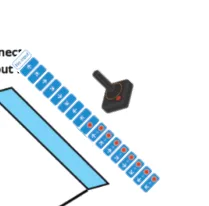
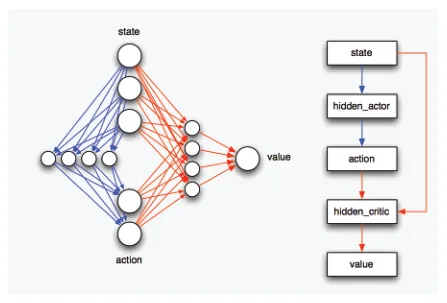
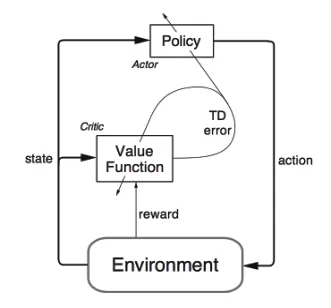
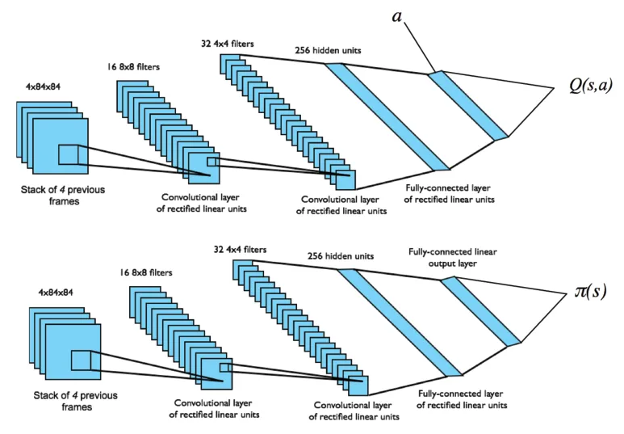
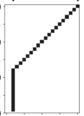
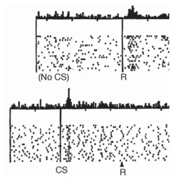

Phần IV · Chương 11 — Kiểm soát vận động và Học tăng cường
11 Điều khiển vận động và học tăng cường
Chương này thảo luận về các hệ thống điều khiển và ra quyết định học hỏi từ sự hướng dẫn chung dưới dạng phản hồi từ môi trường. Chúng ta bắt đầu với một tổng quan ngắn gọn về các hệ thống điều khiển cổ điển mô tả tốt việc điều khiển vận động cơ bản trong não bộ. Sau đó, chúng ta chuyển sang các hệ thống điều khiển thích nghi có thể học các hành động tối ưu từ phản hồi phần thưởng. Điều này có phần khác với học có giám sát cơ bản đã thảo luận trong Chương 7, nơi giáo viên sẽ chỉ định chính xác phản ứng mong muốn của tác tử (agent). Nó cũng khác với học không giám sát vì vẫn có một số phản hồi từ môi trường dưới dạng phần thưởng. Mục tiêu của một tác tử học tăng cường là tìm ra những hành động cần thực hiện để đạt được lợi tức (return) tối ưu, thường là trong các bối cảnh nhiều nhiễu.
11.1 Học tập và điều khiển vận động
Các hệ thống điều khiển là cần thiết để hướng dẫn các hành động cụ thể trong một môi trường không chắc chắn. Ví dụ, bạn có thể nhặt một tách cà phê trước mặt khi nhìn vào nó. Các hành động vận động theo đó đã được khởi phát từ các tín hiệu thị giác, và thường cần phải kết hợp các tinh chỉnh hoặc thông tin cảm giác mới. Chúng ta thường có thể hoàn thành nhiệm vụ này ngay cả khi tầm nhìn bị che khuất. Đó là một trải nghiệm thú vị khi chúng ta làm nhiễu loạn hệ thống này, chẳng hạn bằng cách sử dụng kính lăng kính làm dịch chuyển hình ảnh trực quan của mục tiêu một cách có hệ thống ra khỏi vị trí thực tế của nó, hoặc bằng cách thay đổi động lực học của cánh tay bằng một hệ thống dẫn đường được điều khiển bởi máy tính. Việc với tới một mục tiêu với các tham số đã bị thay đổi của hệ thống được điều khiển thường sẽ thất bại trong vài lần thử đầu tiên. Tuy nhiên, chúng ta thường có thể thích nghi với môi trường đã thay đổi chỉ sau vài lần thử nữa, ngay cả khi không có giáo viên nào chỉ cho chúng ta chính xác cách điều chỉnh việc kiểm soát các cơ bắp của mình.
11.1.1 Bộ điều khiển phản hồi
Việc điều khiển các thiết bị cơ khí hoặc điện tử là một thách thức lớn mà các kỹ sư thường xuyên phải đối mặt. Do đó, không có gì ngạc nhiên khi các kỹ sư đã đóng góp rất nhiều ý tưởng về cách hệ thần kinh có thể điều khiển chuyển động của các chi. Một ví dụ điển hình về hệ thống điều khiển được minh họa trong Hình 11.1.
Trong ví dụ của phần này, chúng ta chỉ định một tín hiệu xác định trạng thái mong muốn làm đầu vào cho hệ thống. Tín hiệu đầu vào này sau đó được chuyển đổi bởi một mô-đun cụ thể thành một lệnh vận động điều khiển thiết bị mà chúng ta muốn kiểm soát. Chúng ta gọi mô-đun này là bộ tạo lệnh vận động (motor command generator). Lệnh vận động được tạo ra có thể, ví dụ, là tín hiệu kích hoạt các nơ-ron vận động cụ thể trong thân não, từ đó kích thích các sợi cơ. Bộ tạo lệnh vận động có thể được xem như một mô hình nghịch đảo của động lực học
Fundamentals of Computational Neuroscience. Third edition. Thomas P. Trappenberg, Oxford University Press. © Oxford University Press 2023. DOI:10.1093/oso/9780192869364.003.00 1 1 của đối tượng được điều khiển vì nó nhận một tín hiệu trạng thái và phải tạo ra lệnh vận động phù hợp sao cho đối tượng được điều khiển kết thúc ở trạng thái mong muốn. Do đó, lệnh vận động gây ra một trạng thái mới của đối tượng mà chúng ta đã gắn nhãn là ‘trạng thái thực tế’ (actual state) trong Hình 11.1.
Nhiễu loạn
Bộ tạo lệnh vận động Mong muốn
Trạng thái thực tế
Hệ thống cảm giác Lệnh vận động
Đối tượng được điều khiển
trạng thái
Hướng tâm (Afferent)
Tái hướng tâm (Re-afferent)
Hình 11.1 Điều khiển phản hồi âm và các thành phần của một hệ thống điều khiển tiêu chuẩn.
Tất nhiên, một câu hỏi lớn là làm thế nào để tìm và triển khai một bộ tạo lệnh vận động phù hợp và chính xác. Về nguyên tắc, chúng ta có thể sử dụng một mạng ánh xạ truyền thẳng được huấn luyện trên các ví dụ về hành động vận động nếu chúng ta có một người giám sát cho hệ thống biết các lệnh vận động đúng là gì. Tuy nhiên, trong thực tế chúng ta không bao giờ nhận được phản hồi chi tiết như vậy. Thay vào đó, phản hồi thường chỉ là một dấu hiệu ‘tốt’ hay ‘xấu’, hoặc liệu mọi thứ đang cải thiện hay trở nên tệ hơn. Cách học bộ tạo điều khiển vận động, còn gọi là tác nhân hành động (actor), từ phản hồi của môi trường sẽ là chủ đề của học tăng cường (RL) được thảo luận ở phần sau của chương này. Ở đây, trước tiên chúng ta thảo luận cách các bộ điều khiển như vậy được nhúng vào các hệ thống điều khiển.
Một khía cạnh quan trọng của các hệ thống điều khiển tiên tiến là chúng ta cần tính đến sự không chắc chắn trong môi trường. Điều này bao gồm sự không chắc chắn trong quan sát của chúng ta về môi trường, một số tính không thể dự đoán của môi trường như các vật thể di chuyển bất ngờ, và sau này là phản hồi phần thưởng từ môi trường. Trong hệ thống điều khiển được thảo luận ở đây, chúng ta đã đưa vào một số khía cạnh này bằng một tín hiệu nhiễu loạn tác động lên đối tượng được điều khiển, có thể bao gồm nhiễu nội tại, các ảnh hưởng bên ngoài như các tải trọng khác nhau lên hệ thống, sự lão hóa của hệ thống, các nhiệt độ khác nhau làm thay đổi tính chất vật lý, v.v. Trong những trường hợp như vậy, chúng ta có thể không đạt được trạng thái mong muốn và phải khởi phát một chuyển động mới để bù đắp cho sự sai lệch giữa trạng thái mong muốn và trạng thái thực tế của đối tượng được điều khiển. Khi đó, cần phải ước lượng sự sai lệch này, điều này đòi hỏi một hệ thống cảm giác. Đối với chuyển động cánh tay, ví dụ, chúng ta có thể sử dụng phản hồi thị giác như đã đề cập ở trên. Phản hồi cảm giác sau đó được tạo ra bên ngoài cơ thể chúng ta, và chúng ta đưa vào một đường chấm chấm chạy qua hộp hệ thống cảm giác để chỉ các tín hiệu cảm giác bắt nguồn từ bên trong và bên ngoài cơ thể. Đầu vào thị giác về vị trí có thể được chuyển đổi thành một tín hiệu phản hồi mà chúng ta gọi là tái hướng tâm (re-afferent). Phản hồi cảm giác cũng có thể bắt nguồn từ các cảm biến bên trong cơ thể. Ví dụ, các tín hiệu thần kinh được tạo ra bởi sự co cơ được truyền ngược về hệ thần kinh trung ương, gọi là phản hồi cảm thụ bản thể (proprioreceptive feedback). Chúng ta gắn nhãn loại phản hồi cảm giác này là hướng tâm (afferent) trong Hình 11.1.
Phản hồi cảm giác có thể được sử dụng theo nhiều cách khác nhau để điều chỉnh hệ thống. Hình 11.1 minh họa ví dụ đơn giản nhất, đó là bộ điều khiển phản hồi âm. Tín hiệu cảm giác cho biết trạng thái thực tế của hệ thống được trừ đi khỏi tín hiệu chỉ định trạng thái mong muốn. Điều này tạo ra một trạng thái mong muốn mới, đôi khi được gọi là tín hiệu lỗi vận động (motor-error signal). Tín hiệu lỗi vận động này cho chuyển động hiệu chỉnh, được tạo ra với sự trợ giúp của tín hiệu phản hồi, tạo ra một chuyển động mới có khả năng gần với trạng thái mong muốn hơn. Tất nhiên, phản hồi cảm giác phải được chuyển đổi sang hệ quy chiếu phù hợp để hệ thống điều khiển vận động sử dụng (không bao gồm trong hình). Các hệ thống điều khiển phản hồi cơ bản thường hoạt động tốt và được sử dụng phổ biến trong các thiết bị cơ khí và điện tử. Tuy nhiên, có một số yếu tố khiến sơ đồ đơn giản này không đủ đối với một số hệ thống sinh học. Ví dụ, phản hồi cảm giác thường quá chậm đối với nhiều nhiệm vụ điều khiển, và độ chính xác cần thiết cũng không phải không có vấn đề. Phản hồi cảm thụ bản thể có thể nhanh hơn nhưng lại có thể không chính xác. Do đó, chúng ta chuyển sang các hệ thống tiên tiến hơn mà chúng ta cho rằng đang hoạt động trong não bộ.
11.1.2 Bộ điều khiển mô hình thuận và mô hình nghịch đảo
Hai sơ đồ tinh chỉnh cho việc điều khiển vận động với phản hồi cảm giác chậm được minh họa trong Hình 11.2. Sơ đồ đầu tiên sử dụng một số hệ thống con mô phỏng động lực học của đối tượng được điều khiển và hành vi của hệ thống cảm giác. Các hệ thống con này được gọi là mô hình thuận (forward models). Nếu các mô hình này là những xấp xỉ tốt cho các hệ thống thực mà chúng đang mô hình hóa, thì chúng ta có thể sử dụng đầu ra của các hệ thống này, thay vì đáp ứng cảm giác chậm chạp, làm tín hiệu phản hồi. Tất nhiên, các mô hình phải được hiệu chỉnh theo hệ thống thực trong quá trình học liên tục. Do đó, phản hồi cảm giác được sử dụng để thay đổi hành vi của mô hình thuận. Mô hình thuận, được chia thành thành phần động lực học và thành phần đầu ra trong hình, ảnh hưởng đến phản hồi cảm giác để cải thiện hiệu suất trong vòng điều khiển chính. Sơ đồ này hoạt động miễn là những thay đổi trong các hệ thống mà chúng mô phỏng chậm hơn nhiều so với thang thời gian của chuyển động được điều khiển, điều thường thấy trong các tình huống điều khiển vận động sinh học.
Sơ đồ thứ hai, được hiển thị trong Hình 11.2B, sử dụng một mô hình nghịch đảo (inverse model) thay cho mô hình thuận trong sơ đồ trước và do đó được gọi là bộ điều khiển mô hình nghịch đảo. Mô hình nghịch đảo, được tích hợp như một vòng phụ vào bộ điều khiển phản hồi tiêu chuẩn, học cách hiệu chỉnh phép tính của bộ tạo lệnh vận động. Lý do sơ đồ này hoạt động tương tự như ví dụ trước. Phản hồi cảm giác có thể được sử dụng để làm cho bộ điều khiển mô hình nghịch đảo chính xác hơn trong khi nó cung cấp các tín hiệu hiệu chỉnh cần thiết kịp thời để được đưa vào lệnh vận động. Cả hai hệ thống điều khiển, bộ điều khiển mô hình thuận và bộ điều khiển mô hình nghịch đảo, đều là các bộ điều khiển bền vững và hoàn toàn có thể được triển khai trong não bộ. Ví dụ, các mô hình như vậy đã được thảo luận như những mô hình cho tiểu não, như được phác thảo bên dưới. Sau đó, chúng ta sẽ thảo luận về một hệ thống điều khiển khác, bộ phê bình thích nghi (adaptive critic), đã được đề xuất như một mô hình của hạch nền (basal ganglia).
11.1.3 Sơ đồ actor–critic
Trong phần trước, chúng ta đã thảo luận các phương pháp ước lượng hàm giá trị, sau đó có thể được dùng để đánh giá các chính sách (policies). Khi sử dụng học tăng cường để điều khiển, chúng ta muốn thay đổi các chính sách nhằm tối đa hóa lợi tức cho tác tử. Do đó, các phương pháp đầy đủ bao gồm một quy trình xen kẽ, trong đó các chính sách được thay đổi theo các hàm giá trị ước lượng, và sau đó chính sách mới được đánh giá bằng cách ước lượng
A. Bộ điều khiển mô hình thuận
Nhiễu loạn
Bộ tạo lệnh vận động Mong muốn
Trạng thái thực tế
Hệ thống cảm giác Lệnh vận động
Đối tượng được điều khiển
trạng thái
Mô hình động lực học thuận
Mô hình đầu ra thuận
+
Hướng tâm (Afferent)
Tái hướng tâm (Re-afferent)
B. Bộ điều khiển mô hình nghịch đảo
Mô hình nghịch đảo
Nhiễu loạn
-+
Bộ tạo lệnh vận động Trạng thái mong muốn
Trạng thái thực tế
Hệ thống cảm giác Lệnh vận động
Đối tượng được điều khiển
Hướng tâm (Afferent)
Tái hướng tâm (Re-afferent)
Hình 11.2 Hai hệ thống điều khiển tiên tiến tích hợp các mô hình để điều chỉnh hiệu chỉnh trong hệ thống. Các mô hình này được huấn luyện bằng phản hồi cảm giác, được chỉ ra bởi các mũi tên đi qua các thành phần này.
hàm giá trị cho chính sách này. Điều thú vị là không cần thiết phải ước lượng hàm giá trị một cách hoàn hảo cho một chính sách nhất định hoặc tìm trực tiếp chính sách tốt nhất cho một hàm giá trị nhất định. Hệ thống có thể bắt đầu với một hệ thống hoạt động yếu, và học tăng cường sẽ cải thiện hệ thống một cách tăng dần. Có thể chứng minh rằng một hệ thống tự khởi động (bootstrapping) như vậy hội tụ về các giải pháp tối ưu miễn là hệ thống có tính ergodic, nghĩa là mỗi trạng thái khả dĩ của môi trường đều đạt được trong thời gian hữu hạn. Tuy nhiên, thay vì đi theo nhiều ứng dụng kỹ thuật tiên tiến trong lĩnh vực này, chúng ta sẽ thảo luận một số ví dụ có liên quan đến quá trình xử lý của não bộ.
Hệ thống điều khiển tiên tiến nhất được gọi là sơ đồ actor–critic được minh họa trong Hình 11.3. Một hệ thống điều khiển như vậy đại diện cho một khuôn khổ phù hợp để thảo luận về các chức năng của não bộ. Ở đây chúng ta cung cấp góc nhìn hệ thống điều khiển của phương pháp này, và thảo luận thêm chi tiết bên dưới sau khi chúng ta đã hình thức hóa bối cảnh RL.
Lưu ý sự tương đồng của sơ đồ điều khiển này với bộ điều khiển mô hình nghịch đảo được phác thảo trong Hình 11.2B. Tuy nhiên, bộ phê bình (critic) được thiết kế để dự đoán lệnh vận động đúng cho các hành động chính xác trong tương lai và do đó có thể giám sát bộ tạo lệnh vận động. Bộ tạo lệnh vận động thường được gọi là bộ hành động (actor) trong khuôn khổ này. Bộ phê bình thích nghi
Bộ phê bình (Critic)
Nhiễu loạn Tín hiệu tăng cường
Bộ tạo lệnh vận động (actor) Mong muốn
Trạng thái thực tế
Hệ thống cảm giác Lệnh vận động
Đối tượng được điều khiển
trạng thái
Hướng tâm (Afferent)
Tái hướng tâm (Re-afferent)
Hình 11.3 Bộ điều khiển phê bình thích nghi.
ước lượng các hàm giá trị và sử dụng chúng để hướng dẫn các hành động của tác tử. Sơ đồ này đã chứng tỏ rất hữu ích trong các ứng dụng kỹ thuật như điều khiển thang máy hoặc điều chỉnh các tham số vận hành của một nhà máy lọc dầu. Các triển khai thần kinh và mối liên hệ với quá trình xử lý của não bộ sẽ được thảo luận bên dưới.
11.2 Điều kiện hóa cổ điển và học tăng cường
Trong học có giám sát, chúng ta giả định rằng một giáo viên cung cấp thông tin chi tiết về phản ứng mong muốn của người học. Điều này đặc biệt phù hợp với nhận dạng đối tượng khi chúng ta có một số lượng lớn các ví dụ được gán nhãn. Một điều kiện học tập phổ biến hơn nhiều là khi một tác tử, chẳng hạn như con người hoặc rô-bốt, phải học cách ra quyết định trong môi trường mà không có các hướng dẫn chi tiết.
Một ví dụ tốt về nhiệm vụ học tập như vậy đối với một tác tử là học chơi quần vợt. Trong trường hợp này, tác tử có thể thử các động tác và được thưởng bằng số điểm mà tác tử ghi được thay vì một giáo viên chỉ định từng chuyển động cơ bắp mà chúng ta cần thực hiện. Hoặc, trong trường hợp của rô-bốt, một kỹ sư thiết kế từng chuỗi kích hoạt động cơ. Một cách tiếp cận giống với học có giám sát là có một huấn luyện viên minh họa các động tác đúng. Loại học có giám sát này được gọi là học bắt chước (imitation learning) trong bối cảnh này. Phần lớn học bắt chước tuân theo thảo luận trước đây nên chúng ta sẽ tập trung trong chương này vào một kịch bản học tập quan trọng, nơi tác tử chỉ nhận được phản hồi đơn giản sau các khoảng thời gian hành động dưới dạng phần thưởng hoặc hình phạt mà không nêu chi tiết hành động nào đã đóng góp vào kết quả. Loại kịch bản học tập này được gọi là học tăng cường (RL).
Việc học với các tín hiệu phần thưởng đã được các nhà tâm lý học nghiên cứu trong nhiều năm dưới thuật ngữ điều kiện hóa (conditioning). Trong điều kiện hóa cổ điển được minh họa trong Hình 11.4A, một tác tử nhận được phần thưởng sau một tín hiệu gợi ý cụ thể. Ví dụ, trong các thí nghiệm nổi tiếng của Pavlov, một con chó nhận được phần thưởng thức ăn sau khi nghe tiếng chuông reo. Nhờ đó, con chó học được sự liên kết giữa tín hiệu và phần thưởng mà Pavlov đã chứng minh bằng cách đo lượng nước bọt tiết ra như một phản ứng với tiếng chuông reo. Theo một thuật ngữ tổng quát hơn, tác tử phải giải quyết bài toán gán công trạng (credit assignment problem), tức là học xem những sự kiện nào tương quan với việc nhận được phần thưởng. Mặc dù điều này tương tự như học có giám sát theo nghĩa đó, học tăng cường thường cũng phải giải quyết bài toán gán công trạng theo thời gian, trong đó phần thưởng chỉ xuất hiện sau một độ trễ thời gian.
để nghiên cứu điều kiện hóa công cụ A. Điều kiện hóa cổ điển 5 4 3 6 7
2
1
0
Hình 11.4 (A) Thiết lập thí nghiệm của điều kiện hóa cổ điển. Các thí nghiệm như vậy không đòi hỏi động vật (tác tử) phải thực hiện một hành động nào. (B) Một thiết lập điều kiện hóa công cụ (instrumental conditioning), trong đó một loài gặm nhấm phải học cách đi qua mê cung và đưa ra quyết định tại ngã ba về hướng đi. Một bài toán ra quyết định như vậy đòi hỏi hành động của một actor.
Trong bối cảnh hơi khác của điều kiện hóa công cụ, tác tử phải thực hiện một hành động để nhận được phần thưởng. Do đó, điều này buộc tác tử phải đưa ra quyết định. Một thiết lập ví dụ được hiển thị trong Hình 11.4B. Trong thí nghiệm được minh họa, một loài gặm nhấm được đặt trong một mê cung chữ T với lượng thức ăn có kích thước khác nhau ở mỗi đầu nhánh ngang của mê cung chữ T. Con vật có thể đi lang thang xung quanh cho đến khi tìm thấy một số phần thưởng. Đây là giai đoạn khám phá (exploration). Sau khi tìm thấy một số phần thưởng, tác tử sau đó sẽ có thể khai thác (exploit) kiến thức này trong các lần thử tiếp theo.
Chúng ta đã đưa vào hai kích thước phần thưởng khác nhau trong mê cung chữ T để minh họa một vấn đề phổ biến trong các ứng dụng thực tế. Đó là, nếu chúng ta chỉ khai thác phần thưởng tìm thấy đầu tiên, làm thế nào chúng ta có thể tìm thấy phần thưởng tốt hơn. Do đó, có một sự đánh đổi thú vị giữa khám phá và khai thác (exploration-exploitation trade-off) có thể ảnh hưởng đến các hành vi khác nhau.
Có hai cách tiếp cận chính để học các hệ thống ra quyết định như vậy mà chúng ta gọi là RL không mô hình (model-free) và RL dựa trên mô hình (model-based). Trong RL không mô hình, chúng ta chỉ đơn giản khai thác trí nhớ về phần thưởng ở các trạng thái cụ thể của môi trường. Ngược lại, một cách tiếp cận dựa trên mô hình nhằm mục đích trước tiên học một mô hình của thế giới, từ đó nó có thể suy luận các hành động tốt để đạt tới các trạng thái có phần thưởng. Từ ‘mô hình’ ở đây đề cập đến một mô hình của môi trường và các hành động khả dĩ mà từ đó có thể tính toán các hành động tối ưu. Một hệ thống cân nhắc kỹ lưỡng như vậy dường như có những lợi thế rõ ràng về tính linh hoạt và khả năng khái quát hóa sang các môi trường mới với các hành vi hướng mục tiêu rõ ràng. Tuy nhiên, cũng rõ ràng là một cách tiếp cận như vậy cần một khuôn khổ mô hình phức tạp hơn, và việc tính toán các phản ứng tối ưu cũng đòi hỏi nỗ lực và có thể mất một khoảng thời gian. Ngược lại, các quyết định không mô hình có thể nhanh chóng vì nó chỉ tự động lặp lại các hành động mang lại phần thưởng trước đó mà không cần cân nhắc nhiều. Các hệ thống ra quyết định như vậy giống với việc ra quyết định theo thói quen hơn nhiều. Có nhiều bằng chứng cho thấy cả hai hệ thống ra quyết định này đều được hiện thực hóa trong não bộ.
Phần lớn học tăng cường trong tài liệu AI và điều kiện hóa cơ bản trong tài liệu học tập ở động vật đều thảo luận về cách tiếp cận không mô hình, và rất đáng để phác thảo ý tưởng chính ở đây trước khi đi sâu vào chi tiết. Động lực chính trong lý thuyết này là học sai phân thời gian (temporal difference learning). Đối với điều này, chúng ta xem xét một tác tử ở các trạng thái khả dĩ khác nhau s, và tác tử muốn chọn các trạng thái có giá trị lớn. Giá trị V (s) của một trạng thái theo đó được định nghĩa bởi phần thưởng tức thời r(s) cộng với tất cả phần thưởng trong tương lai. Điều này cũng được gọi là lợi tức (return). Chúng ta có thể học hàm giá trị
TD
Học
V
V st
Hành động
at
Quỹ đạo
Hình 11.5 Minh họa RL không mô hình với một mạng nơ-ron làm bộ xấp xỉ cho hàm giá trị. Việc huấn luyện đạt được thông qua học Sai phân Thời gian (TD), và đầu ra của bộ phê bình (critic) này được sử dụng để hướng dẫn hành vi của tác tử.
bằng mạng nơ-ron như minh họa trong Hình 11.5. Vấn đề duy nhất là tác tử không có giáo viên cho biết giá trị thực sự của trạng thái là bao nhiêu. Giáo viên chỉ cho biết phần thưởng tức thời. Ý tưởng chính bây giờ là một dạng tự khởi động (bootstrapping), trong đó tác tử ước lượng phần thưởng tương lai từ hàm giá trị ở trạng thái tiếp theo mà tác tử ghé thăm. Do đó, quy tắc học bao gồm hiệu số giữa giá trị mới (được ước lượng) r(s) + γV (s + 1) và giá trị mà nó giả định trước trải nghiệm mới, V (s). Hiệu số này được gọi là lỗi sai phân thời gian (temporal difference error)
TD = r(s) + γV (s + 1) −V (s), (11.1) và mạng có thể được huấn luyện, ví dụ, bằng cách cực tiểu hóa trung bình bình phương của lỗi sai phân thời gian.
Mặc dù điều này nắm bắt được ý tưởng chính của học tăng cường không mô hình, nhưng có nhiều thách thức khi áp dụng các phương pháp này vào các môi trường phức tạp hơn. Đã có nhiều tiến bộ gần đây trong lĩnh vực này dựa trên các cân nhắc bổ sung mà chúng ta sẽ đề cập ở phần dưới. Tuy nhiên, điều quan trọng cần lưu ý là não bộ sử dụng nhiều phương pháp hơn nữa để đóng góp vào việc ra quyết định tốt, bao gồm cả việc ra quyết định dựa trên mô hình.
11.3 Hình thức hóa học tăng cường
Trước tiên chúng ta hình thức hóa bài toán học tập trong một quá trình quyết định Markov và sau đó thảo luận một loạt các thuật toán liên quan. Đầu tiên chúng ta sẽ thảo luận về RL trong bối cảnh dạng bảng (tabular) truyền thống, nơi môi trường được mô tả bằng các trạng thái rời rạc và các hành động cũng là các lựa chọn rời rạc. Sau đó, chúng ta sẽ mô tả phần thứ hai của chương này sử dụng các bộ xấp xỉ hàm với mạng nơ-ron, vốn đã tạo ra những tiến bộ gần đây dưới tên gọi RL sâu (deep RL).
11.3.1 Bối cảnh môi trường của quá trình quyết định Markov
Sẽ rất hữu ích nếu hình thức hóa thêm các kịch bản học tập như vậy với các trạng thái rời rạc. Chúng ta xem xét một tác tử tại thời điểm t đang ở một trạng thái cụ thể st. Một trạng thái theo đó mô tả môi trường, chẳng hạn như vị trí mà tác tử có thể đang đứng. Hơn nữa, chúng ta giả định rằng tác tử có thể thực hiện một hành động at từ mỗi trạng thái. Trong bối cảnh của một tác tử di động, hành động at thường được cung cấp bởi một lệnh vận động từ chương trình điều khiển, nhưng chúng ta cũng có thể nghĩ về các hành động này ở mức độ cao hơn như rẽ phải hoặc rẽ trái trong mê cung. Mục đích của học tăng cường là huấn luyện một bộ điều khiển, tức bộ não của tác tử, để đưa ra quyết định nên thực hiện hành động nào từ mỗi trạng thái. Hàm này được gọi là chính sách (điều khiển) (policy) trong học tăng cường
Chính sách: at = π(st) tất định π(at|st) ngẫu nhiên. (11.2)
Theo đó, chúng ta đã cung cấp hai công thức: một công thức tất định với hàm thông thường và một công thức ngẫu nhiên bằng cách chỉ định một hàm xác suất. Nhìn chung, việc xem xét các bối cảnh xác suất là rất hữu ích. Ví dụ, mặc dù bộ điều khiển thực thi chính sách có ý định di chuyển một phương tiện tiến về phía trước, một trục trặc trong chương trình lại thực thi một quy trình rẽ. Do đó, trong trường hợp này, chính sách chỉ định xác suất mà một hành động được thực hiện, π(at|ss). Chúng ta sẽ phác thảo phần lớn các thảo luận trong bối cảnh tất định để đơn giản và giảm thiểu ký hiệu. Chúng ta sử dụng bối cảnh xác suất trong các phần sau khi thích hợp và sẽ tiếp tục phác thảo các công thức của bài toán trong cả hai bối cảnh.
Có hai hàm nữa mà chúng ta cần giới thiệu để mô tả môi trường mà bộ điều khiển phải hoạt động. Hàm đầu tiên là
Hàm chuyển tiếp: st+1 = τ(st, at) tất định τ(st+1|st, at) ngẫu nhiên. (11.3) hàm này chỉ đơn giản chỉ định trạng thái kết quả khi một tác tử thực hiện hành động at từ trạng thái st. Một lần nữa, việc xem xét bối cảnh xác suất là hữu ích vì trạng thái thực tế của tác tử có thể khác với dự định do các yếu tố bên ngoài không nằm dưới sự kiểm soát của tác tử. Ví dụ, ngay cả khi bộ điều khiển thực thi hàm tiến về phía trước trong một khoảng cách nhất định, một độ dốc trên đường có thể dẫn đến việc vượt quá vị trí mong muốn. Trong một bối cảnh xác suất như vậy, hàm chuyển tiếp chỉ định xác suất chuyển tiếp τ(st+1|st, at) để kết thúc ở trạng thái st+1, khi thực hiện hành động at từ trạng thái st.
Chúng ta giới hạn thảo luận ở đây theo giả định phổ biến rằng hàm chuyển tiếp chỉ phụ thuộc vào trạng thái trước đó và hành động dự định từ trạng thái tương ứng. Điều này được gọi là điều kiện Markov. Chuỗi các trạng thái với các xác suất chuyển tiếp là một chuỗi Markov, và chuỗi dành cho ví dụ mê cung chữ T được hiển thị trong Hình 11.4D. Một điều kiện phi Markov sẽ là trường hợp trong đó trạng thái tiếp theo phụ thuộc vào một chuỗi các trạng thái và hành động trước đó, và tác tử của chúng ta khi đó sẽ cần một bộ nhớ để đưa ra các quyết định tối ưu. Tình huống được mô tả bởi điều kiện Markov là khá tự nhiên vì nhiều quá trình ra quyết định chỉ phụ thuộc vào trạng thái hiện tại. Do đó, điều kiện Markov là một kịch bản tốt và không phải là hạn chế thực sự của các phương pháp học tăng cường mà chúng ta sẽ thảo luận sau, nhưng nó sẽ đơn giản hóa một số ký hiệu và thảo luận.
Hàm môi trường quan trọng thứ hai gói gọn giả định rằng môi trường hoặc một giáo viên cung cấp phần thưởng theo
Hàm phần thưởng: rt+1 = ρ(st, at) tất định ρ(rt+1|st, at) ngẫu nhiên. (11.4)
Hàm phần thưởng này trả về giá trị phần thưởng khi tác tử đi vào trạng thái st+1 bằng cách thực hiện hành động at từ trạng thái st. Trong hầu hết các trường hợp, phần thưởng chỉ phụ thuộc vào trạng thái mà nó đi vào, nhưng do đó nó phụ thuộc vào trạng thái trước đó và hành động được thực hiện từ trạng thái này. Trong bối cảnh xác suất, phần thưởng ρ(st+1|st, at) là xác suất nhận được phần thưởng ở trạng thái st+1 khi thực hiện hành động at từ trạng thái st.
Các hàm môi trường τ và ρ, cùng với các đặc tả của tập hợp trạng thái S và hành động A, định nghĩa môi trường mà chúng ta muốn ra quyết định. Vì chúng ta giới hạn thảo luận của mình vào các chuỗi Markov, quá trình quyết định tương ứng được gọi là quá trình quyết định Markov (MDP). Lưu ý rằng chúng ta giả định trong ký hiệu của mình rằng tác tử biết mình đang ở trạng thái nào. Mặc dù chúng ta sẽ thấy rằng điều này dễ dàng trong các mô phỏng như được trình bày sau, nhưng đây là một vấn đề lớn trong thực tế khi trạng thái cần được suy ra từ các quan sát. Ví dụ, đây là một trường hợp phổ biến trong ngành rô-bốt, nơi chúng ta có các cảm biến như camera hoặc con quay hồi chuyển mà từ đó chúng ta muốn ước lượng tư thế của rô-bốt. Hơn nữa, chúng ta thường phải suy luận các trạng thái từ các quan sát hạn chế. Bối cảnh tổng quát này thường được gọi là quá trình quyết định Markov quan sát được một phần (POMDP). Trước tiên chúng ta thảo luận các ý tưởng cơ bản trong bối cảnh MDP, sau đó thảo luận về DeepRL có thể được áp dụng trực tiếp cho bối cảnh POMDP.
RL đối mặt với một số thách thức. Một thách thức được gọi là bài toán gán công trạng (credit assignment problem). Điều này bao gồm việc hành động nào (gán công trạng không gian) và tại thời điểm nào (gán công trạng thời gian) của hệ thống nên được ghi công cho việc đạt được phần thưởng. Một khía cạnh quan trọng khác hoàn toàn mới so với học có giám sát là tác tử phải tìm kiếm các giải pháp bằng cách thử các hành động khác nhau. Do đó, tác tử nhìn chung phải đóng một vai trò tích cực trong việc khám phá các lựa chọn. Ngay cả khi tác tử tìm thấy một giải pháp mang lại cho nó một số phần thưởng, câu hỏi vẫn có thể đặt ra là liệu đây có phải là một giải pháp tốt hay tác tử nên tìm kiếm một giải pháp tốt hơn hoặc gắn bó với các phần thưởng đã biết. Vấn đề này thường được phát biểu là ‘sự đánh đổi giữa khám phá và khai thác’. Giả sử rằng loài gặm nhấm (tác tử) đã tìm thấy phần thưởng thức ăn nhỏ hơn ở cuối nhánh trái của mê cung chữ T. Khi đó, nhiều khả năng con vật sẽ rẽ trái trong các lần thử tiếp theo để nhận phần thưởng thức ăn. Như vậy, tác tử đã học được rằng hành động rẽ trái và đi đến cuối nhánh gắn liền với phần thưởng thức ăn. Tất nhiên, trong trường hợp này, con vật cũng có thể nhận được phần thưởng lớn hơn khi khám phá nhánh phải của mê cung, điều này một lần nữa minh họa sự đánh đổi khám phá–khai thác trong các bối cảnh học tập như vậy.
Nhiều ứng dụng của học tăng cường hiện nay áp dụng mạng sâu làm bộ học. Tuy nhiên, chúng ta sẽ bắt đầu hình thức hóa thảo luận về RL bằng biểu diễn dạng bảng truyền thống hơn của các hàm, điều này sẽ cho chúng ta cơ hội thảo luận các ví dụ chính xác mà không cần xấp xỉ hàm. Sau đó chúng ta sẽ quay lại việc sử dụng các bộ xấp xỉ hàm.
Để minh họa các sơ đồ học tăng cường khác nhau được thảo luận trong chương này, chúng ta sẽ áp dụng các thuật toán này vào một phiên bản đơn giản hóa của ví dụ mê cung chữ T đã đề cập ở trên. Để giữ cho các chương trình tối giản và gọn gàng, chúng ta tập trung vào phần tuyến tính phía trên của mê cung như minh họa trong Hình 11.6. Các trạng thái s của mê cung được gắn nhãn từ 0 đến 4. Một phần thưởng có giá trị 1 được cung cấp ở trạng thái 0 và một phần thưởng có giá trị 2 được cung cấp ở trạng thái 4. Hàm Q rời rạc có 10 giá trị tương ứng với mỗi hành động khả dĩ ở mỗi trạng thái. Ở các trạng thái 1, 2 và 3, đây là các hành động di chuyển sang trái hoặc di chuyển sang phải. Các trạng thái có phần thưởng, trạng thái 0 và 4, là các trạng thái kết thúc và tác tử sẽ ở lại các trạng thái này nếu không được nhắc di chuyển. Chúng ta mã hóa điều này bằng hành động được gắn nhãn là 0 trong hình.
Đến
0 2 1 4 3 Trạng thái Hành động
s s l r l r l r s s s s l r l r l r s s
1 0 0 0 0 0 0 0 0 0 0 1 0 0 0 0 0 0 0 0 1 0 0 0 0 0 0 0 0 0 0 0 0 0 0 1 0 0 0 0 0 0 1 0 0 0 0 0 0 0 0 0 0 0 0 0 0 1 0 0 0 0 0 0 0 1 0 0 0 0 0 0 0 0 0 0 0 0 0 1 0 0 0 0 0 0 0 0 1 0 0 0 0 0 0 0 0 0 0 1
0 1 2 3 4 5 6 7 8 9
Trạng thái x: 0 1 2 3 4
0
1 ρ(x): 1 0 0 0 2
Từ
2 s s l r l r l r s s Q*(x,u):
0 0 1 0.5 0.5 1 0.5 2 0 0
3 π(x):
4
Chỉ số
0 1 2 3 4 5 6 7 8 9
Hình 11.6 Thí nghiệm ví dụ với mê cung chữ T đơn giản hóa, trong đó chúng ta tập trung vào phần ngang thú vị hơn của mê cung (mê cung tuyến tính). Phía bên phải hiển thị ma trận chuyển tiếp tương ứng cho chính sách tối ưu.
Để bắt đầu lập trình các ví dụ này, chúng ta sẽ định nghĩa một số hàm đơn giản như trình bày bên dưới. Hai hàm đầu tiên là các hàm môi trường gồm hàm chuyển tiếp τ(s, a) và hàm phần thưởng ρ(s). Lưu ý rằng các hàm này thường không được tác tử biết trước, nhưng chúng ta sẽ quay lại điểm này. Ngoài ra, chúng ta cung cấp một số hàm trợ giúp, một hàm tính toán chính sách từ hàm giá trị như sẽ thảo luận ngay sau đây, và một hàm idx(a) để biến đổi biểu diễn hành động a ∈{−1, 1} thành các chỉ số tương ứng idx ∈{0, 1}, điều mà chúng ta cần cho việc triển khai cụ thể các hành động trong ví dụ này.
Listing 11.1 RL.ipynb (Part 1) 1 ## Reinforcement l e a r n i n g in 1d maze 2 import numpy as np 3 import m a t p l o t l i b . pyplot as p l t 4 5 def tau ( s , a ) : 6 i f s==0 or s ==4: r e t u r n ( s ) 7 e l s e : r e t u r n ( s+a ) 8 def rho ( s , a ) : 9 r e t u r n ( s==1 and a==−1)+2∗( s==3 and a == 1) 10 def c a l c p o l i c y (Q) : 11 p o l i c y =np . zeros ( 5 ) 12 f o r s in range ( 0 , 5 ) : 13 a c t i o n i d x =np . argmax (Q[ s , : ] ) 14 p o l i c y [ s ]=2∗a c t i o n i d x −1 15 p o l i c y [0]= p o l i c y [4]=0 16 r e t u r n p o l i c y . astype ( i n t ) 17 def idx ( a ) : 18 r e t u r n ( i n t ( ( a + 1 ) / 2 ) )
Mục tiêu của tác tử là tối đa hóa tổng phần thưởng kỳ vọng trong tương lai từ mọi trạng thái ban đầu. Đại lượng này được gọi là lợi tức (return) trong kinh tế học. Tất nhiên, nếu chúng ta giả định rằng điều này diễn ra mãi mãi, thì lợi tức này sẽ là vô hạn, và từ đó chúng ta phải cẩn thận hơn một chút. Một lựa chọn phổ biến là định nghĩa lợi tức là phần thưởng trung bình trong một khoảng thời gian hữu hạn, còn gọi là trường hợp chân trời hữu hạn (finite horizon). Một dạng phổ biến khác để giữ cho lợi tức hữu hạn là sử dụng lợi tức chiết khấu (discounted return), trong đó tác tử coi trọng phần thưởng tức thời hơn phần thưởng đạt được xa trong tương lai. Để nắm bắt điều này, chúng ta định nghĩa một hệ số chiết khấu 0 < γ < 1. Trong chương trình ví dụ, chúng ta sẽ sử dụng giá trị γ = 0.5,
Listing 11.2 RL.ipynb (Part 2) 1 # Discount Factor 2 gamma=0.5 mặc dù các giá trị gần 1 hơn nhiều như γ = 0.99 cũng rất phổ biến. Đối với trường hợp này, bây giờ chúng ta định nghĩa một hàm giá trị trạng thái-hành động. Hàm này cho chúng ta một giá trị số của lợi tức (tất cả phần thưởng được chiết khấu trong tương lai) khi tác tử đang ở trạng thái s, thực hiện hành động a và sau đó tuân theo chính sách cho các hành động tiếp theo,
∞ X
Hàm giá trị (trạng thái-hành động): Qπ(s, a) = ρ(s, a) +
γtρ(st, π(st)). (11.5) t=1
Nói cách khác, hàm này cho chúng ta biết hành động a tốt như thế nào ở trạng thái s, và do đó kiến thức về hàm giá trị này sẽ hướng dẫn các hành động của tác tử. Mục đích của học tăng cường dựa trên giá trị là ước lượng hàm này. Ở đây, trước tiên chúng ta xem xét trường hợp tất định và quay lại một công thức khác trong trường hợp ngẫu nhiên cho các trường hợp chân trời hữu hạn sau.
Đôi khi chúng ta chỉ quan tâm đến hàm giá trị ngay cả khi chúng ta tuân theo chính sách cho bước đầu tiên trong chuỗi hành động từ trạng thái s. Khi đó, hàm giá trị này không phụ thuộc tường minh vào hành động, tất nhiên chỉ phụ thuộc gián tiếp vào chính sách, và được định nghĩa là tổng lợi tức chiết khấu từ trạng thái s = s0 tuân theo chính sách π,
Hàm giá trị (trạng thái): V π(s) = Qπ(s, π(s)). (11.6)
Mục tiêu của RL là tìm chính sách tối đa hóa lợi tức. Nếu tác tử biết
Hàm giá trị tối ưu : V ∗(s) = max
a Q∗(s, a), (11.7) thì chính sách tối ưu chỉ đơn giản được đưa ra bằng cách thực hiện hành động dẫn đến lợi tức kỳ vọng lớn nhất, cụ thể là
Chính sách tối ưu : π∗(s) = arg max
a Q∗(s, a). (11.8)
Hàm này được triển khai ở đây bằng mã python cho calc policy.
Hàm giá trị tối ưu và chính sách tối ưu có mối liên hệ chặt chẽ với nhau. Chúng ta sẽ thảo luận sau đây một số phương pháp để tính toán hoặc ước lượng hàm giá trị mà từ đó có thể suy ra chính sách. Các phương pháp này có thể được xếp dưới tiêu đề tìm kiếm giá trị (value-search). Các tác tử tương ứng, hoặc một phần của các thuật toán RL tương ứng, thường được gọi là bộ phê bình (critic). Cũng có những phương pháp để học trực tiếp chính sách. Các phương pháp như vậy được gọi là tìm kiếm chính sách (policy-search) và các tác tử tương ứng được gọi là bộ hành động (actor). Cuối cùng, chúng ta sẽ lập luận rằng việc kết hợp các cách tiếp cận này trong sơ đồ actor–critic có những đặc điểm hấp dẫn, và các sơ đồ như vậy ngày càng được sử dụng nhiều trong các ứng dụng thực tế với sự trợ giúp của mạng nơ-ron làm bộ xấp xỉ hàm. Chúng ta sẽ từng bước tiến tới lĩnh vực thú vị này.
11.3.2 Học tăng cường dựa trên mô hình
Trong phần này, chúng ta giả định rằng tác tử có một mô hình của môi trường, bao gồm cả kiến thức về các trạng thái phần thưởng ρ(s, a) và các hàm chuyển tiếp τ(s, a). Kiến thức về các hàm này, hoặc một mô hình của chúng, là cần thiết cho RL dựa trên mô hình. Thách thức cơ bản trong các ứng dụng thực tế là học các hàm này từ các ví dụ về tác tử hành động trong môi trường. Ở đây chúng ta quan tâm nhiều hơn đến việc chỉ ra cách tính toán các chính sách tối ưu nếu chúng ta biết các hàm này.
11.3.2.1 Phương trình Bellman cơ bản
Chìa khóa để học các hàm giá trị là nhận ra rằng vế phải của phương trình 11.5 có thể được viết theo chính hàm Q, cụ thể là
∞ X
Qπ(s, a) = ρ(s, a) + γ
γt−1ρ(st, π(st)) t=1
∞ X
"
# γt−2ρ(st, π(st))
= ρ(s, a) + γ ρ(τ(s, a), π(τ(s, a))) + γ
.
t=2
Số hạng trong ngoặc vuông bằng hàm giá trị của trạng thái đạt được sau phép chuyển tiếp τ(s, a)
Qπ(τ(s, a), π(τ(s, a))) = V π(τ(s, a)). (11.9)
Hàm Q và hàm V ở đây tương đương nhau vì chúng ta đang tuân theo chính sách trong các bước này. Sử dụng thực tế này trong phương trình trên, chúng ta thu được phương trình Bellman π: Qπ(s, a) = ρ(s, a) + γQπ(τ(s, a), π(τ(s, a))). (11.10)
Nếu chúng ta kết hợp điều này với các phương trình động lực học đã biết trong miền thời gian liên tục, thì đây sẽ trở thành phương trình Hamilton–Jacobi–Bellman, thường gặp trong kỹ thuật.
Như đã nêu trước đó, ở đây chúng ta giả định rằng hàm phần thưởng ρ(s, a) và các hàm chuyển tiếp τ(s, a) đã biết. Tại thời điểm này, tác tử tuân theo một chính sách xác định π(s). Giả sử thêm rằng chúng ta có ns trạng thái và na hành động khả dĩ ở mỗi trạng thái. Do đó, chúng ta có ns × na đại lượng chưa biết Qπ(s, a) bị chi phối bởi phương trình Bellman. Chính xác hơn, phương trình Bellman 11.10 là ns × na phương trình tuyến tính ghép cặp của các ẩn Qπ(s, a). Khi đó, thật thuận tiện để viết hệ phương trình này bằng vectơ
Qπ = R + γTπQπ (11.11)
trong đó T π là một ma trận chuyển tiếp thích hợp phụ thuộc vào chính sách. Phương trình này cũng có thể được viết là
R = (11 −γTπ)Qπ, (11.12)
trong đó 11 là ma trận đơn vị. Phương trình này có nghiệm
Qπ = (11 −γTπ)−1R (11.13)
nếu ma trận nghịch đảo tồn tại. Nói cách khác, miễn là tác tử biết hàm phần thưởng và hàm chuyển tiếp, nó có thể tính toán hàm giá trị cho một chính sách cụ thể mà không cần thực hiện dù chỉ một bước. Đây là một ví dụ về hệ thống cân nhắc kỹ lưỡng, nơi tác tử có thể sử dụng các mô hình phần thưởng và môi trường để tính toán các quyết định tối ưu, do đó được gọi là RL dựa trên mô hình.
Để minh họa cách giải phương trình Bellman bằng các công cụ đại số tuyến tính, chúng ta cần định nghĩa các vectơ và ma trận tương ứng như được sử dụng trong phương trình 11.13. Do đó, chúng ta sắp xếp các đại lượng như ρ và Q với 10 chỉ số. Chỉ số đầu tiên tương ứng với (s = 0, u = −1), chỉ số thứ hai với (s = 0, u = 1), chỉ số thứ ba với (s = 1, u = −1), v.v. Do đó, vectơ phần thưởng có thể được viết mã như sau:
Listing 11.3 RL.ipynb (Part 3) 1 p r i n t ( ’−−> A na l y t i c s o l u t i o n f o r optimal p o l i c y ’ ) 2 # Defining reward v e c t o r R 3 i =0; R=np . zeros (10) 4 f o r s in range ( 0 , 5 ) : 5 f o r a in range ( −1 ,2 ,2): 6 R[ i ]= rho ( s , a ) 7 i += 1
Ma trận chuyển tiếp phụ thuộc vào chính sách, vì vậy chúng ta cần chọn một chính sách. Chúng ta chọn chính sách được chỉ định ở bên trái trong Hình 11.6, nơi tác tử sẽ di chuyển sang trái ở trạng thái s = 1 và sang phải ở các trạng thái s = 2 và s = 3. Đây tình cờ là giải pháp tối ưu, như chúng ta sẽ chỉ ra sau, do đó điều này cũng sẽ cho chúng ta một nghiệm cho hàm giá trị tối ưu. Chúng ta sử dụng chính sách này để xây dựng ma trận chuyển tiếp bằng tay như hiển thị ở bên phải trong Hình 11.6. Ví dụ, nếu chúng ta đang ở trạng thái s = 4 và di chuyển sang trái, a = −1, tương ứng với chỉ số-từ = 7, thì chúng ta kết thúc ở trạng thái s = 3, từ đó chính sách bảo đi sang phải, a = 1. Điều này tương ứng với chỉ số-đến = 9. Do đó, ma trận chuyển tiếp phải có một phần tử T(7, 9) = 1. Xét qua tất cả các trường hợp sẽ cho kết quả
Listing 11.4 RL.ipynb (Part 4) 1 # Defining t r a n s i t i o n matrix 2 T=np . zeros ( [ 1 0 , 1 0 ] ) ; 3 T[ 0 , 0 ] = 1 ; T[ 1 , 1 ] = 1 ; T[ 2 , 0 ] = 1 ; T[ 3 , 5 ] = 1 ; T[4 ,2]=1 4 T[ 5 , 7 ] = 1 ; T[ 6 , 5 ] = 1 ; T[ 7 , 9 ] = 1 ; T[ 8 , 7 ] = 1 ; T[9 ,9]=1
Với điều này, chúng ta có thể giải hệ phương trình ma trận tuyến tính này bằng hàm inv() trong gói đại số tuyến tính của NumPy,
Listing 11.5 RL.ipynb (Part 5) 1 # C a l c u l a t e Q−f u n c t i o n 2 Q=np . l i n a l g . inv ( np . eye (10)−gamma∗T) @ np . t r a n s p o s e (R) 3 Q=np . reshape (Q, [ 5 , 2 ] ) ; Q[4 ,0]=0
Chúng ta đã định hình lại hàm Q kết quả sao cho hàng đầu tiên hiển thị các giá trị cho các chuyển động sang trái ở mỗi trạng thái và hàng thứ hai hiển thị các giá trị cho chuyển động sang phải ở mỗi trạng thái. Từ đây, chúng ta có thể tính toán chuyển động nào cần thực hiện ở mỗi trạng thái, cụ thể chỉ là hành động tương ứng với giá trị lớn nhất trong mỗi cột,
Listing 11.6 RL.ipynb (Part 6) 1 p o l i c y = c a l c p o l i c y (Q)
Cuối cùng chúng ta in kết quả bằng
Listing 11.7 RL.ipynb (Part 7) 1 p r i n t ( ’Q values : \n ’ , np . t r a n s p o s e (Q) ) 2 p r i n t ( ’ p o l i c y : \n ’ , np . t r a n s p o s e ( p o l i c y ) ) cho kết quả đầu ra --> Analytic solution for optimal policy Q values:
[[0. 1. 0.5 0.5 0. ] [0. 0.5 1. 2. 0. ]] policy:
[ 0 -1 1 1 0] Tác tử đang di chuyển sang trái ở trạng thái 1 vì điều này sẽ dẫn đến phần thưởng tức thời là 1 và di chuyển sang phải ở các trạng thái khác vì điều này sẽ mang lại phần thưởng lớn hơn, ngay cả khi đã tính đến việc chiết khấu cho nhiều bước hơn. Tất nhiên, tại thời điểm này lập luận của chúng ta là tuần hoàn vì chúng ta đã bắt đầu với giả định rằng chúng ta sử dụng chính sách tối ưu như được chỉ định trong ma trận chuyển tiếp ngay từ đầu. Chúng ta sẽ sớm thấy cách bắt đầu với một chính sách tùy ý và cải thiện nó để tìm ra chiến lược tối ưu. Cũng lưu ý rằng ma trận chuyển tiếp là hoàn hảo theo nghĩa là bước di chuyển dự định luôn dẫn đến trạng thái cuối cùng dự định. Một mở rộng xác suất của ma trận chuyển tiếp này khá hữu ích trong việc mô tả các tình huống thực tế hơn.
Trong mã nguồn, chúng ta lưu các giá trị Q tối ưu cho chính sách tối ưu
Listing 11.8 RL.ipynb (Part 9) 1 Qana=Q
để sau này chúng ta có thể vẽ đồ thị sự khác biệt so với các phương pháp giải khác.
Các phương trình Bellman là một tập hợp gồm n phương trình tuyến tính ghép cặp cho n giá trị Q chưa biết, và chúng ta đã giải chúng ở đây bằng hàm đại số tuyến tính để tìm nghịch đảo của một ma trận. Việc tìm nghịch đảo của một hàm có thể được triển khai bằng các thuật toán khác nhau như khử Gauss. Tuy nhiên, phổ biến hơn nhiều là sử dụng một quy trình lặp để giải phương trình Bellman. Đối với thuật toán lặp này, chúng ta bắt đầu với một ước lượng của hàm Q, hãy gọi là Qπ i , và cải thiện nó bằng cách tính vế phải của phương trình Bellman,
Quy hoạch động : Qπ
i+1(s, a) ←ρ(s, a) + γQπ i (τ(s, a), π(τ(s, a))).
(11.14) Điểm bất động của phương trình này, tức là các giá trị không thay đổi qua các lần lặp này, chính là các giá trị mong muốn của Qπ. Một cách khác để nghĩ về thuật toán này là đẳng thức Bellman chỉ đúng với các giá trị Qπ chính xác. Đối với phỏng đoán của chúng ta, hiệu số giữa vế trái và vế phải khác 0, nhưng chúng ta đang cực tiểu hóa hiệu số này bằng quy trình lặp ở trên. Mã nguồn tương ứng là
Listing 11.9 RL.ipynb (Part 9) 1 p r i n t ( ’−−> Dynamic Programming ’ ) 2 3 Q=np . zeros ( [ 5 , 2 ] )
4 f o r i t e r in range ( 3 ) : 5 f o r s in range ( 0 , 5 ) : 6 f o r a in range ( −1 ,2 ,2): 7 a c t = np . i n t ( p o l i c y [ tau ( s , a ) ] ) 8 Q[ s , idx ( a )]= rho ( s , a )+gamma∗Q[ tau ( s , a ) , idx ( a c t ) ] 9 10 p r i n t ( ’Q values : \n ’ , np . t r a n s p o s e (Q) ) 11 p r i n t ( ’ p o l i c y : \n ’ , np . t r a n s p o s e ( p o l i c y ) ) với đầu ra --> Dynamic Programming: Q values:
[[0. 1. 0.5 0.5 0. ] [0. 0.5 1. 2. 0. ]] policy:
[ 0 -1 1 1 0] đây tất nhiên là cùng một nghiệm đúng như được tìm thấy bằng phép nghịch đảo ma trận tường minh. Phương pháp lặp này là một cách triển khai phổ biến hơn nhiều và nó không đòi hỏi việc viết mã tường minh cho ma trận chuyển tiếp. Các cách tiếp cận lặp sẽ được sử dụng trong tất cả các phương pháp tiếp theo được thảo luận sau này. Lưu ý rằng chúng ta mới chỉ sử dụng ba lần lặp để hội tụ về nghiệm đúng. Mặc dù ở đây chúng ta đặt số lần lặp bằng tay, nhưng trong thực tế chúng ta lặp cho đến khi những thay đổi trong các giá trị đủ nhỏ.
11.3.2.2 Lặp chính sách (Policy iteration)
Mục tiêu của RL tất nhiên là tìm ra chính sách tối đa hóa lợi tức. Cho đến nay chúng ta mới chỉ thảo luận một phương pháp để tính giá trị cho một chính sách nhất định. Tuy nhiên, chúng ta có thể bắt đầu với một chính sách tùy ý và có thể sử dụng hàm giá trị tương ứng để cải thiện chính sách bằng cách định nghĩa một chính sách mới được đưa ra bằng cách thực hiện các hành động từ mỗi trạng thái mang lại cho chúng ta giá trị lợi tức tiếp theo tốt nhất, a Qπ(s, a). (11.15)
Lặp chính sách : π(s) ←arg max
Đối với chính sách mới, sau đó chúng ta có thể tính hàm Q tương ứng và rồi sử dụng hàm Q này để cải thiện chính sách một lần nữa. Việc lặp lại trên chính sách mang lại cho chúng ta
Chính sách tối ưu : π∗(s). (11.16)
Hàm giá trị tương ứng là Q∗. Trong ví dụ mê cung, chúng ta có thể thấy rằng giá trị lớn nhất trong mỗi cột của ma trận Q chính là chính sách mà chúng ta đã bắt đầu. Đây là chính sách tối ưu, như chúng ta đã nêu trước đó.
Mã nguồn tương ứng cho ví dụ mê cung của chúng ta là
Listing 11.10 RL.ipynb (Part 10) 1 p r i n t ( ’−−> Policy i t e r a t i o n ’ ) 2 3 Q=np . zeros ( [ 5 , 2 ] ) 4 p o l i c y = c a l c p o l i c y (Q) 5 f o r i t e r in range ( 3 ) : 6 f o r s in range ( 0 , 5 ) : 7 f o r a in range ( −1 ,2 ,2):
8 a c t = np . i n t ( p o l i c y [ tau ( s , a ) ] ) 9 Q[ s , idx ( a )]= rho ( s , a )+gamma∗Q[ tau ( s , a ) , idx ( a c t ) ] 10 p o l i c y = c a l c p o l i c y (Q) 11 12 p r i n t ( ’Q values : \n ’ , np . t r a n s p o s e (Q) ) 13 p r i n t ( ’ p o l i c y : \n ’ , np . t r a n s p o s e ( p o l i c y ) ) với đầu ra --> Policy iteration Q values: [[0. 1. 0.5 0.5 0. ] [0. 0.5 1. 2. 0. ]] policy: [ 0 -1 1 1 0] một lần nữa dẫn đến kết quả đúng. Lưu ý rằng trong ví dụ này, chúng ta một lần nữa chỉ lặp ba lần trên các chính sách. Về nguyên tắc, chúng ta có thể và nên lặp nhiều lần cho mỗi chính sách để hội tụ đến một ước lượng ổn định cho Qπ này. Tuy nhiên, các cải tiến sẽ dẫn đến trạng thái ổn định rất nhanh, ít nhất là trong ví dụ đơn giản này.
11.3.2.3 Hàm Bellman cho chính sách tối ưu và lặp giá trị (Q)
Vì chúng ta chủ yếu quan tâm đến chính sách tối ưu, chúng ta có thể thử giải phương trình Bellman ngay lập tức cho chính sách này,
Q∗(s, a) = ρ(s, a) + γQ∗(τ(s, a), π∗(τ(s, a))). (11.17)
Vấn đề là phương trình này hiện phụ thuộc vào π∗ chưa biết. Tuy nhiên, chúng ta có thể kiểm tra ở mỗi trạng thái tất cả các hành động và chọn hành động mang lại cho chúng ta lợi tức tốt nhất. Điều này phải tương đương với phương trình trên trong trường hợp tối ưu. Do đó, chúng ta đề xuất
Phương trình Bellman tối ưu: Q∗(s, a) = ρ(s, a) + γ max a′ Q∗(τ(s, a), a′). (11.18)
Chúng ta có thể giải phương trình này một lần nữa bằng phương pháp lặp khi hàm chuyển tiếp và các hàm phần thưởng đã biết,
Lặp Q: Q∗ a′ Q∗(τ(s, a), a′). (11.19)
i+1(s, a) ←ρ(s, a) + γ max
Mã nguồn tương ứng cho ví dụ mê cung của chúng ta là
Listing 11.11 RL.ipynb (Part 11) 1 p r i n t ( ’−−> Q−i t e r a t i o n ’ ) 2 3 Q new=np . zeros ( [ 5 , 2 ] ) 4 Q=np . zeros ( [ 5 , 2 ] ) 5 f o r i t e r in range ( 3 ) : 6 f o r s in range ( 0 , 5 ) : 7 f o r a in range ( −1 ,2 ,2): 8 maxValue = np . maximum (Q[ tau ( s , a ) , 0 ] ,Q[ tau ( s , a ) , 1 ] ) 9 Q new [ s , idx ( a )]= rho ( s , a )+gamma∗maxValue 10 Q=np . copy ( Q new ) ; 11 12 p o l i c y = c a l c p o l i c y (Q) 13 p r i n t ( ’Q values : \n ’ , np . t r a n s p o s e (Q) ) 14 p r i n t ( ’ p o l i c y : \n ’ , np . t r a n s p o s e ( p o l i c y ) ) với đầu ra
--> Q-iteration Q values: [[0. 1. 0.5 0.5 0. ] [0. 0.5 1. 2. 0. ]] policy: [ 0 -1 1 1 0]
Trong ví dụ này, chúng ta một lần nữa chỉ sử dụng ba lần lặp, điều này là đủ để đạt được các giá trị chính xác. Trong thực tế, chúng ta có thể kết thúc chương trình nếu các thay đổi đủ nhỏ, điều mà chúng ta đã không triển khai ở đây để giữ cho mã nguồn ngắn gọn.
Có một sự khác biệt thú vị giữa phương pháp lặp giá trị này và phương pháp lặp chính sách trước đó. Trong phương pháp lặp chính sách, chúng ta đã tuân theo chính sách để tính toán hàm giá trị được cập nhật. Chúng ta gọi một phương pháp như vậy là theo chính sách (on-policy). Ngược lại, trong lặp giá trị (Q), chúng ta kiểm tra tất cả các hành động khả dĩ từ trạng thái này để cập nhật hàm giá trị. Quy trình như vậy được gọi là ngoài chính sách (off-policy).
11.3.3 Học tăng cường không mô hình
11.3.3.1 Phương pháp sai phân thời gian cho lặp giá trị
Ở trên, chúng ta đã giả định một mô hình của môi trường bằng kiến thức tường minh về các hàm τ(s, a) và ρ(s, a). Mặc dù các phương trình Bellman đã được biết từ những năm 1950, tính hữu ích của chúng bị hạn chế do thực tế là việc tìm ra các hàm môi trường có thể rất khó khăn. Đây là một trong những lý do khiến các kỹ thuật RL như vậy chưa có nhiều ứng dụng vào thời điểm đó. Chúng ta có thể sử dụng các kỹ thuật mô hình hóa và một số chiến lược lấy mẫu để học các hàm này bằng các kỹ thuật học máy và sau đó sử dụng RL dựa trên mô hình như đã mô tả ở trên để tìm chính sách tối ưu. Ví dụ, chúng ta có thể sử dụng các minh họa hành động của một giáo viên như một dạng học có giám sát cho các mô hình. Như đã đề cập trước đó, việc học có giám sát như vậy thường được gọi là học bắt chước (imitation learning) trong bối cảnh rô-bốt và RL. Chúng ta không đi theo hướng suy nghĩ này ở đây mà thay vào đó sẽ kết hợp việc lấy mẫu trực tiếp với học tăng cường bằng cách khám phá môi trường. Cách tiếp cận này đã giúp áp dụng RL vào nhiều ứng dụng hơn. Vì chúng ta không cần biết các hàm môi trường, cách tiếp cận này được gọi là không mô hình (model-free).
Chúng ta sẽ bắt đầu lại với một phiên bản cho một chính sách cụ thể bằng cách chọn một chính sách và ước lượng hàm Q cho chính sách này. Như trong các phương pháp lặp trước đó, chúng ta muốn cực tiểu hóa sự khác biệt giữa vế trái và vế phải của phương trình Bellman. Nhưng chúng ta không thể tính vế phải vì chúng ta không biết hàm chuyển tiếp và hàm phần thưởng. Tuy nhiên, chúng ta có thể chỉ cần thực hiện một bước theo chính sách của mình u = π(s) và quan sát phần thưởng ri+1 cùng trạng thái tiếp theo si+1. Bây giờ, vì đây chỉ là một mẫu, chúng ta chỉ nên sử dụng điều này để cập nhật hàm giá trị với một tốc độ học nhỏ α. Thuật toán tương ứng là
SARSA: Qi+1(si, ai) = Qi(si, ai) + α [(ri+1 + γQi(si+1, ai+1) −Qi(si, ui)] .
(11.20) Tên gọi này xuất phát từ thực tế là chúng ta đang ở một trạng thái, từ đó chúng ta thực hiện một hành động và quan sát một phần thưởng, rồi đi đến trạng thái tiếp theo và thực hiện hành động:
s →a →r →s →a.
Số hạng trong ngoặc vuông ở vế phải của phương trình 11.20 được gọi là sai phân thời gian (temporal difference) vì đó là hiệu số giữa giá trị kỳ vọng trước đó tại một thời điểm nào đó và ước lượng mới từ phần thưởng thực tế cùng ước lượng tiếp theo tại điểm đánh giá thời gian kế tiếp. Lưu ý rằng chúng ta đang tuân theo chính sách, và do đó phương pháp này một lần nữa là một phương pháp theo chính sách (on-policy).
Bước tiếp theo là sử dụng ước lượng của hàm Q để cải thiện chính sách. Tuy nhiên, vì chúng ta chủ yếu quan tâm đến chính sách tối ưu, chúng ta nên cải thiện chính sách bằng cách thực hiện các bước tối đa hóa phần thưởng. Tuy nhiên, một vấn đề trong sơ đồ này là chúng ta phải ước lượng các giá trị Q bằng cách lấy mẫu, do đó chúng ta phải đảm bảo cân bằng giữa khai thác và khám phá. Một cách phổ biến để chọn chính sách trong sơ đồ này là
= 1 −ϵ. (11.21) chính sách ϵ-tham lam: p arg max a Q(s, a)
Vì vậy, chúng ta thực sự đang đánh giá chính sách tối ưu, điều này đòi hỏi chúng ta phải đưa việc khám phá về 0 ở cuối, ϵ →0. Mã nguồn tương ứng cho SARSA là:
Listing 11.12 RL.ipynb (Part 12) 1 p r i n t ( ’−−> SARSA’ ) 2 3 Q=np . zeros ( [ 5 , 2 ] ) 4 e r r o r = [ ] 5 alpha =1; 6 f o r t r i a l in range ( 2 0 0 ) : 7 p o l i c y = c a l c p o l i c y (Q) 8 s=2 9 f o r t in range ( 0 , 5 ) : 10 a= p o l i c y [ s ] 11 i f np . random . rand () <0.1: a=−a # e p s i l o n greedy 12 a2=idx ( p o l i c y [ tau ( s , a ) ] ) 13 TD=rho ( s , a )+gamma∗Q[ tau ( s , a ) , a2]−Q[ s , idx ( a ) ] 14 Q[ s , idx ( a )]=Q[ s , idx ( a )]+ alpha ∗TD 15 s= tau ( s , a ) 16 e r r o r . append ( np . sum ( np . sum ( np . abs ( np . s u b t r a c t (Q, Qana ) ) ) ) ) 17 18 p r i n t ( ’Q values : \n ’ , np . t r a n s p o s e (Q) ) 19 p r i n t ( ’ p o l i c y : \n ’ , np . t r a n s p o s e ( p o l i c y ) ) 20 p l t . f i g u r e ( ) ; p l t . p l o t ( e r r o r ) 21 p l t . x l a b e l ( ’ i t e r a t i o n ’ ) ; p l t . y l a b e l ( ’ e r r o r ’ ) với đầu ra --> SARSA Q values: [[0. 1. 0.5 0.5 0. ] [0. 0.5 1. 2. 0. ]] policy: [ 0 -1 1 1 0] Hình 11.7 cho thấy hiệu số giữa giá trị Q của thuật toán này và giá trị Q của nghiệm giải tích tiến về 0 và do đó hội tụ về nghiệm đúng.
Đôi khi việc này có thể mất nhiều lần lặp hơn vì việc khám phá các trạng thái ngoài chính sách không thường xuyên. Tất nhiên, điều này cũng phụ thuộc vào chiến lược khám phá.
4
3 lỗi
2
1
0
0 50 100 150 200 lần lặp
Hình 11.7 Đường cong học tập ví dụ của thuật toán SARSA. Lỗi là hiệu số tuyệt đối giữa giá trị Q của thuật toán này và giá trị Q được tính bằng giải tích ở trên.
Lưu ý rằng chúng ta đã đặt tốc độ học α = 1 cho ví dụ này, điều này làm cho quy tắc cập nhật trông tương tự như phương pháp lặp của trường hợp dựa trên mô hình
Qi+1(si, ai) = (ri+1 + γQi(si+1, ai+1). (11.22)
Tuy nhiên, có một sự khác biệt lớn. Trước đây chúng ta lặp qua tất cả các trạng thái khả dĩ với kiến thức về hàm chuyển tiếp và hàm phần thưởng; do đó tác tử thực sự không phải khám phá môi trường và chỉ có thể ‘ngồi đó’ và tính toán xem hành động tối ưu là gì. Đây là lợi ích của học tăng cường dựa trên mô hình. Ngược lại, ở đây chúng ta thảo luận trường hợp không biết hàm chuyển tiếp và hàm phần thưởng và do đó phải khám phá môi trường bằng cách hành động trong đó. Vì điều này thường gắn liền với một chuyển động vật lý, nó tốn thời gian và do đó giới hạn việc khám phá mà chúng ta có thể làm. Vì vậy, thông thường một tác tử không thể khám phá tất cả các trạng thái khả dĩ trong các môi trường lớn. Ngoài ra, tốc độ học α = 1 không phải lúc nào cũng được khuyến khích vì một bối cảnh phổ biến hơn là bản thân phần thưởng mang tính xác suất. Một giá trị α nhỏ hơn khi đó đại diện cho một dạng lấy trung bình trượt và do đó ước lượng giá trị kỳ vọng của phần thưởng.
r(x): 0 0 0 0 1 π(x):
Q(x,u): 0 0 0 0 0 0 0 0
0 0 0 0 0 0 0
0 0 0 0 1 1/2 0 0
0 0 0 1/8
0 1/4
1 1/2
1
0 0 0 0 0 0 0 0
0 0 0 0 0 0 0
1 1/2 0 0
0 0 0 1/4
0 1/8
0
0 0 1/4
1 1/2
1
0 0 0 0 0 0 0 0
0 0
0 0 0 0 1 1/2
0 0
0 0 1 1/2
0 0 1/8
0 0 0 1/2
0 1/4
0 1/4
0 1/4
0 0 0
0 0 0 0 1
0 0 0 0 1 0 0
0 0 1 0 0
0 1
1/2 0 1/4 1/2
0 1/8
0
1/2
0
Tập 1 Tập 2
Tập 3 Tập 4
Hình 11.8 Ví dụ về sự ‘lan truyền ngược’ của phần thưởng (không nên nhầm lẫn với thuật toán lan truyền ngược trong học có giám sát). Trong ví dụ này, một tập luôn bắt đầu ở trạng thái ngoài cùng bên trái và chính sách là luôn đi sang phải. Phần thưởng được nhận ở trạng thái ngoài cùng bên phải.
Sẽ rất hữu ích khi tự tính qua một vài lần lặp của thuật toán SARSA bằng tay cho ví dụ mê cung tuyến tính. Trong ví dụ minh họa ở Hình 11.8, chúng ta đã thay đổi tình huống thành một mê cung tuyến tính trong đó trạng thái luôn bắt đầu ở trạng thái ngoài cùng bên trái và phần thưởng r = 1 được nhận ở trạng thái ngoài cùng bên phải. Chính sách là luôn đi sang phải, đây cũng là chính sách tối ưu trong tình huống này. Tại bước thời gian đầu tiên của tập đầu tiên, chúng ta đang ở trạng thái ngoài cùng bên trái và đánh giá giá trị của việc đi sang phải. Ở trạng thái tương ứng bên phải không có phần thưởng nào được trao, và hàm giá trị cũng bằng 0. Vì vậy giá trị của cặp trạng thái-hành động này là 0. Điều tương tự cũng đúng cho mỗi bước cho đến khi chúng ta ở trạng thái ngay trước trạng thái phần thưởng. Tại thời điểm này, giá trị được cập nhật thành phần thưởng của trạng thái tiếp theo. Trong tập thứ hai, giá trị của trạng thái thứ nhất và thứ hai vẫn bằng 0, nhưng trạng thái thứ ba được cập nhật thành γ ∗1 vì giá trị của trạng thái tiếp theo tuân theo chính sách được cho là 1, và chúng ta chiết khấu giá trị này theo γ. Đi qua nhiều tập hơn, có thể thấy rằng giá trị ‘lan truyền ngược’ từng bước một trong mỗi tập. Lưu ý rằng sự lan truyền ngược giá trị này không nên nhầm lẫn với thuật toán lan truyền ngược (backpropagation) trong học có giám sát. Ngoài ra, hãy để ý rằng các giá trị của hàm Q cho việc đi sang trái không được cập nhật vì chúng ta chỉ tuân theo chính sách tối ưu một cách tất định. Một số bước khám phá cuối cùng sẽ cập nhật các giá trị này, mặc dù có thể mất một thời gian dài cho đến khi các giá trị này lan truyền qua hệ thống.
Có một thuật toán cơ bản quan trọng nữa mà chúng ta cần đề cập trong phần này về học sai phân thời gian. Thuật toán cuối cùng này là sử dụng một cách thay thế để ước lượng hàm giá trị bằng cách tiếp cận ngoài chính sách (off-policy) cho bước ước lượng từ mỗi trạng thái đã ghé thăm. Tức là, chúng ta kiểm tra tất cả các hành động khả dĩ từ trạng thái mà chúng ta đánh giá và cập nhật hàm giá trị với lợi tức kỳ vọng tối đa, h i a′ Qi(si+1, a′) −Qi(si, ai)
Q-learning: Qi+1(si, ai) = Qi(si, ai)+α`
(ri+1 + γ max (11.23) Chúng ta vẫn phải khám phá môi trường, thường tuân theo chính sách ước lượng tối ưu, với một số cho phép khám phá chẳng hạn như chiến lược khám phá ϵ-tham lam hoặc softmax. Mã nguồn tương ứng cho Q-learning là
Listing 11.13 RL.ipynb (Part 13) 1 p r i n t ( ’−−> Q−Learning : ’ ) 2 3 Q=np . zeros ( [ 5 , 2 ] ) 4 alpha =1 5 e r r o r = [ ] 6 f o r t r i a l in range ( 2 0 0 ) : 7 p o l i c y = c a l c p o l i c y (Q) 8 s=2 9 f o r t in range ( 0 , 5 ) : 10 a= p o l i c y [ s ] 11 i f np . random . rand () <0.2: a=−a # e p s i l o n greedy 12 TD=rho ( s , a )+gamma ∗ 13 np . maximum (Q[ tau ( s , a ) , 0 ] ,Q[ tau ( s , a ) ,1]) −Q[ s , idx ( a ) ] 14 Q[ s , idx ( a )]=Q[ s , idx ( a )]+ alpha ∗TD 15 Q[ 0 ] = 0 ;Q[ 4 ] = 0 ; 16 s= tau ( s , a ) 17 e r r o r . append ( np . sum ( np . sum ( np . abs ( np . s u b t r a c t (Q, Qana ) ) ) ) ) 18 19 p r i n t ( ’Q values : \n ’ , np . t r a n s p o s e (Q) ) 20 p r i n t ( ’ p o l i c y : \n ’ , np . t r a n s p o s e ( p o l i c y ) )
21 p l t . p l o t ( e r r o r , ’ r ’ ) ; 22 p l t . x l a b e l ( ’ i t e r a t i o n ’ ) ; p l t . y l a b e l ( ’ e r r o r ’ ) với đầu ra --> Q-Learning: Q values: [[0. 1. 0.5 0.5 0. ] [0. 0.5 1. 2. 0. ]] policy: [ 0 -1 1 1 0]
11.3.3.2 TD(λ)
Ví dụ về mê cung tuyến tính trong phần trước đã cho thấy rằng kỳ vọng phần thưởng lan truyền ngược trong mỗi tập, do đó đòi hỏi nhiều lần lặp lại các tập để đánh giá hàm giá trị. Lý do cho điều này là chúng ta chỉ ghi công cho bước đi đến một trạng thái có giá trị cho bước ngay trước đó và do đó chỉ cập nhật hàm giá trị tương ứng. Một cách tiếp cận khác là theo dõi những trạng thái nào đã dẫn đến phần thưởng và gán công trạng cho từng bước đã được ghé thăm. Tuy nhiên, vì chúng ta chiết khấu phần thưởng tỷ lệ với thời gian cần thiết để đến được trạng thái có phần thưởng, chúng ta cũng cần tính đến điều này.
r(x): 0 0 0 0 1 π(x):
Q(x,u): e=0
0 0 0 e=1 e=0 e=0
0 e=1 e=γ e=0 e=0
0 0 0 0 e=γ e=γ2 e=0 e=1
0 0 0 0 e=γ2 e=γ3 e=1 e=γ
1/4 1 1/2 1/8
Tập 1
Hình 11.9 Ví dụ về sự ‘lan truyền ngược’ của phần thưởng trong thuật toán TD(1). So với sự lan truyền ngược chậm chạp trong thuật toán TD(0), như minh họa trong Hình 11.8, bộ nhớ được bổ sung cho phép gán công trạng trong toàn bộ tập.
Để hiện thực hóa điều này, chúng ta giới thiệu một vết đủ điều kiện (eligibility trace) mà chúng ta gọi là e(s, a). Ban đầu, vết đủ điều kiện này được đặt bằng 0 cho tất cả các trạng thái. Đối với mỗi trạng thái đã ghé thăm, chúng ta đặt trạng thái đủ điều kiện bằng 1 cho trạng thái hiện tại này, và chúng ta chiết khấu tính đủ điều kiện cho tất cả các trạng thái khác theo γ. Điều này được minh họa trong Hình 11.9. Trong hình, chúng ta chỉ ra vết đủ điều kiện tại mỗi bước thời gian. Lưu ý cách vết đủ điều kiện tích tụ trong một tập cho đến khi đạt đến trạng thái có phần thưởng, tại thời điểm đó giá trị của tất cả các trạng thái được cập nhật theo đúng tỷ lệ. Do đó, thuật toán này chỉ cần một tập tối ưu để tìm ra hàm giá trị chính xác, ít nhất là trong trường hợp này với tốc độ học α = 1. Như vậy, để chuyển một thuật toán TD sang TD(1), chúng ta thay đổi việc xây dựng vết đủ điều kiện ở mỗi bước e(s, a) ←e(s, a)γ cho mọi s,a (11.24)
và cập nhật tất cả các giá trị Q tỷ lệ với lỗi TD của bước này nhân với vết đủ điều kiện,
Q(s, a) ←Q(s, a) + αTD ∗e(s, a). (11.25)
Mặc dù thuật toán này đòi hỏi một chút bộ nhớ, chúng ta thấy rằng chúng ta chỉ cần lưu trữ một vết đủ điều kiện chỉ định gián tiếp chuỗi hành động mà tác tử đã thực hiện. Cũng rất dễ mở rộng thuật toán này sang một dạng tổng quát hơn gọi là TD(λ), trong đó chúng ta có thể nội suy giữa thuật toán TD gốc không có vết đủ điều kiện, gọi là TD(0), với vết bộ nhớ hoàn hảo của TD(1). Sự suy giảm theo hàm mũ của một vết đủ điều kiện có thể được triển khai đơn giản bằng cách đưa vào một hệ số λ trong phương trình 11.24, e(s, a) ←e(s, a)γλ cho mọi s,a. (11.26)
Thuật toán này được triển khai cho phiên bản Q-learning của học sai phân thời gian trong mã nguồn ở Listing 10.15.
Listing 11.14 RL.ipynb (Part 14) 1 p r i n t ( ’−−> TD( lambda ) f o r Q−l e a r n i n g ’ ) 2 3 Q=np . zeros ( [ 5 , 2 ] ) 4 alpha =1 5 e r r o r = [ ] 6 e l i g i b i l i t y =np . zeros ( [ 5 , 2 ] ) 7 lam =0.7 8 9 f o r t r i a l in range ( 2 0 0 ) : 10 p o l i c y = c a l c p o l i c y (Q) 11 s=2 12 f o r t in range ( 0 , 5 ) : 13 a= p o l i c y [ s ] 14 i f np . random . rand () <0.1: a=−a # e p s i l o n greedy 15 TD=rho ( s , a )+gamma ∗ 16 np . maximum (Q[ tau ( s , a ) , 0 ] ,Q[ tau ( s , a ) ,1]) −Q[ s , idx ( a ) ] 17 e l i g i b i l i t y ∗=gamma∗lam 18 e l i g i b i l i t y [ s , idx ( a )]=1 19 f o r s i in range ( 1 , 4 ) : 20 f o r a i in range ( 2 ) : 21 Q[ si , a i ]=Q[ si , a i ]+ alpha ∗TD∗e l i g i b i l i t y [ si , a i ] 22 Q[ 0 ] = 0 ;Q[ 4 ] = 0 ; 23 s= tau ( s , a ) 24 e r r o r . append ( np . sum ( np . sum ( np . abs ( np . s u b t r a c t (Q, Qana ) ) ) ) ) 25 26 p r i n t ( ’Q values : \n ’ , np . t r a n s p o s e (Q) ) 27 p r i n t ( ’ p o l i c y : \n ’ , np . t r a n s p o s e ( p o l i c y ) ) 28 p l t . p l o t ( e r r o r , ’ r ’ ) ; 29 p l t . x l a b e l ( ’ i t e r a t i o n ’ ) ; p l t . y l a b e l ( ’ e r r o r ’ ) với đầu ra
--> TD(lambda) for Q-learning Q values:
[[0. 0.99999999 0.49999994 0.49998045 0. ] [0. 0.25 1. 2. 0. ]] policy: [ 0 -1 1 1 0]
TD(λ) được Gerald Tesauro làm cho nổi tiếng vào đầu những năm 1990 vì đã đạt được hiệu suất ngang tầm con người khi chơi cờ backgammon. Ngoài ra, giải pháp của Tesauro đã sử dụng mạng nơ-ron làm bộ xấp xỉ hàm, điều này rất quan trọng để nắm bắt không gian trạng thái-hành động có số chiều lớn. Điều này sẽ được thảo luận trong phần tiếp theo.
11.4 Học tăng cường sâu
11.4.1 Xấp xỉ hàm giá trị bằng ANN
Cho đến thời điểm này, chúng ta đã phác thảo các ý tưởng cơ bản đằng sau các thuật toán học tăng cường. Bây giờ chúng ta sẽ chuyển sang một chủ đề quan trọng để mở rộng quy mô các ý tưởng này sang các ứng dụng thực tế. Phương pháp trước đây chúng ta sử dụng đã lập bảng các giá trị cho các hàm. Ví dụ, hàm giá trị trong các chương trình trên là các bảng tra cứu hoặc mảng theo thuật ngữ lập trình, chỉ định hàm giá trị cho từng trạng thái và hành động rời rạc. Tương ứng, điều này dẫn đến các bảng cho chính sách. Các thuật toán như vậy hiện nay thường được gọi là thuật toán RL dạng bảng (tabular RL). Vấn đề với cách tiếp cận này là các bảng này có thể trở nên rất lớn đối với số chiều trạng thái và hành động lớn. Quả thực, nhu cầu tính toán tăng lên khi tính toán các đại lượng này trong nhiều ứng dụng thực tế thường là quá sức, đặc biệt là trong bối cảnh ngẫu nhiên nơi chúng ta phải lấy mẫu trong không gian trạng thái-hành động.
Để minh họa điểm này bằng một ví dụ phổ biến, hãy nghĩ xem RL dạng bảng sẽ trông như thế nào nếu chúng ta triển khai việc học chơi một trò chơi máy tính. Hãy thảo luận ví dụ về các trò chơi Atari 2600 đã được triển khai trong môi trường học tập arcade bởi Michael Bowling và các đồng nghiệp tại Đại học Alberta. Môi trường này mô phỏng đầu vào video RGB 210 × 160 ở tần số 60Hz. Một ví dụ về các màn hình video này được hiển thị trong Hình 11.10. Không gian trạng thái của các trò chơi này tương đương với một vectơ đầu vào trạng thái có độ dài 100.800 mỗi 1/60 giây. Ngay cả khi mỗi điểm ảnh chỉ được phép có, chẳng hạn, biểu diễn 8 bit, tương đương với 28 = 256 giá trị khả dĩ, và tất cả các giá trị điểm ảnh là độc lập, thì sẽ có 256100800 trạng thái khả dĩ. Rõ ràng điều này là không thể triển khai bằng các phương pháp dạng bảng đã nêu trước đó. Bellman đã nhận thấy hạn chế thực tế này và đặt ra cụm từ ‘lời nguyền chiều dữ liệu’ (curse of dimensionality). Ý tưởng chính để vượt qua lời nguyền chiều dữ liệu là sử dụng các bộ xấp xỉ hàm để biểu diễn các hàm, và không có gì ngạc nhiên khi chúng ta sẽ sử dụng cụ thể các mạng nơ-ron sâu cho các phép xấp xỉ hàm này.
![Một số loại bộ xấp xỉ hàm đã được sử dụng trong quá khứ. Xấp xỉ hàm tuyến tính (hồi quy tuyến tính) thường được thảo luận trong các sách kỹ thuật vì nó cung cấp một đường cơ sở tốt và phần nào có thể xử lý được bằng giải tích. Tuy nhiên, nhiều ứng dụng thực tế có tính phi tuyến cao, và đó là lý do chúng ta đã thảo luận về mạng nơ-ron. Mạng nơ-ron đã được áp dụng cho RL từ khá lâu. Một ví dụ hay về sự thành công của TD(λ) đã được đề cập ở trên đối với việc chơi cờ backgammon. Bây giờ chúng ta sẽ chỉ ra cách triển khai các mạng cơ bản như vậy cho học tăng cường.](img/img_p361_1.webp)
Hình 11.10 Ví dụ về các màn hình video của trình mô phỏng trò chơi Atari 2600.
Để minh họa ý tưởng cơ bản của việc sử dụng mạng nơ-ron với RL, chúng ta quay lại ví dụ mê cung của mình. Dạng cơ bản của việc triển khai hàm Q bằng mạng nơ-ron là tạo ra một mạng nơ-ron nhận đầu vào là một trạng thái và một hành động, sau đó xuất ra các giá trị Q như minh họa trong Hình 11.11 với mạng A. Để huấn luyện mạng này bằng học có giám sát, chúng ta sẽ cần các ví dụ về hàm giá trị, thứ mà tất nhiên chúng ta không có. Tuy nhiên, chúng ta đã thảo luận cách có thể ước lượng các giá trị như vậy bằng sai phân thời gian trong khi khám phá các quỹ đạo trong môi trường. Ví dụ, chúng ta có thể bắt đầu với một hàm Q tùy ý, sử dụng SARSA để ước lượng một phiên bản cải thiện của Q, và sau đó sử dụng phiên bản này làm trạng thái mong muốn trong một hàm mất mát bình phương trung bình. Nghĩa là, chúng ta có thể định nghĩa số hạng lỗi (hàm mất mát) sau đây
E(st, at) = (rt+1 + γQ(st+1, ut+1; w) −Q(st, at; w))2 (11.27) và sử dụng lan truyền ngược để huấn luyện các trọng số của mạng biểu diễn hàm Q.
3 Q(a ) Q(a ) s1 a Q Q(a ) Q(a ) s
1
1
3 A B C
Q(a ) s
Q(a ) s s
2
2
2
3
Hình 11.11 Các cách khác nhau để triển khai một bộ xấp xỉ hàm cho hàm giá trị.
Mặc dù cách tiếp cận mạng nơ-ron cho SARSA có thể được áp dụng ngay lập tức cho một không gian trạng thái và hành động liên tục, nhiều ứng dụng có một tập hợp các hành động khả dĩ hữu hạn và tương đối nhỏ, và phổ biến hơn là sử dụng chiến lược Q-learning (ngoài chính sách) trong trường hợp này. Ở đây chúng ta phải so sánh các giá trị Q của tất cả các hành động khả dĩ từ một trạng thái cụ thể. Mặc dù chúng ta có thể chỉ cần lặp qua mạng trước đó, chúng ta cũng có thể học một mạng cung cấp các giá trị Q cho tất cả các hành động khả dĩ. Cách tiếp cận này đã được Riedmiller thực hiện vào năm 2005 với thuật toán lặp Q khớp thần kinh (neurally fitted Q-iteration - NFQ). Ý tưởng cơ bản được hiển thị trong Hình 11.11 với mạng B. Trong trường hợp này, chúng ta có thể huấn luyện mạng với hàm mất mát sau đây a Q(st+1, a; w) −Q(st, at; w))2 (11.28)
E(st, at) = (rt+1 + γ max tương ứng với việc huấn luyện các kết nối đến nút chiến thắng cũng như tất cả các kết nối đi vào nó thông qua lan truyền ngược. Để áp dụng chiến lược này cho ví dụ mê cung, ở đây chúng ta sẽ biểu diễn vectơ trạng thái dưới dạng vectơ 1-hot. Ví dụ, nếu tác tử đang ở trạng thái 2 thì chúng ta có thể viết vectơ đầu vào 1-hot cho mạng là s=np.array([0,0,1,0,0]). Một mạng như vậy được minh họa trong Hình 11.11C. Sau đó, chúng ta phải sửa đổi nhẹ các hàm trợ giúp của mình để tính toán trạng thái tiếp theo, và chúng ta cũng cần một hàm nhỏ để xác định xem trạng thái đó có phải là trạng thái cuối cùng hay không.
Listing 11.15 RLmlp.ipynb (Part 1) 1 import numpy as np 2 import m a t p l o t l i b . pyplot as p l t 3 from keras import models , l a y e r s , o p t i m i z e r s 4 5 def tau ( s , a ) : 6 i f ( s [ 0 ] and s [ 4 ] ) == 0 : 7 s=np . r o l l ( s , a ) 8 r e t u r n s 9 def rho ( s ) : 10 r e t u r n ( ( s [0]==1)+2∗( s [4]==1)) 11 def t e r m i n a l s t a t e ( s ) : 12 r e t u r n ( s [0]==1 or s [4]==1) 13 14 gamma=0.5 15 invT = 1
Biến invT đại diện cho nghịch đảo nhiệt độ cho việc khám phá. Nó được đặt rất cao lúc ban đầu, nhưng sau đó chúng ta sẽ làm suy giảm giá trị này. Vì vậy, có rất nhiều sự khám phá ở giai đoạn đầu nhưng ít hơn nhiều về sau.
Sau đó chúng ta định nghĩa một mạng kết nối dày đặc (dense) nhỏ với năm đầu vào cho vectơ trạng thái, mười nút ẩn và hai nút đầu ra, mỗi nút biểu diễn giá trị Q cho mỗi hành động khả dĩ, đó là đi sang trái hoặc sang phải.
Listing 11.16 RLmlp.ipynb (Part 2) 1 # the network 2 i n p u t s = l a y e r s . Input ( shape = ( 5 , ) ) 3 h = l a y e r s . Dense (10 , a c t i v a t i o n = ’ r e l u ’ ) ( i n p u t s ) 4 o u t p u t s = l a y e r s . Dense (2 , a c t i v a t i o n = ’ l i n e a r ’ ) ( h ) 5 6 model = models . Model ( i n p u t s = inputs , o u t p u t s = o u t p u t s ) 7 RMSprop = o p t i m i z e r s . RMSprop ( l r =0.01) 8 model . compile ( l o s s = ’mse ’ , o p t i m i z e r =RMSprop )
Để huấn luyện mạng, chúng ta lặp lại nhiều lần thử, trong đó chúng ta bắt đầu tác tử ở trạng thái 2 và tiến hành tối đa 5 bước thời gian. Trong ví dụ này, chúng ta đưa vào sự suy giảm của tỷ lệ khám phá (invT) như đã đề cập để các ước lượng cuối cùng gần với các giá trị giải tích hơn. Từ trạng thái hiện tại, chúng ta sử dụng mạng để dự đoán giá trị Q tương ứng và sau đó tiến một bước để tính mục tiêu cho việc học gradient là r + Q(next s). Mạng sau đó được cập nhật ngay lập tức.
Listing 11.17 RLmlp.ipynb (Part 3) 1 f o r t r i a l in range ( 4 0 0 ) : 2 s= np . a r r a y ( [ 0 , 0 , 1 , 0 , 0 ] ) 3 f o r t in range ( 0 , 5 ) : 4 i f t e r m i n a l s t a t e ( s ) : break 5 i f t r i a l > 30 and invT > 0 . 1 : invT −= 0.001 6 p r e d i c t i o n =model . p r e d i c t ( s . reshape ( 1 , 5 ) , s t e p s =1 , verbose =0)
7 aidx =np . argmax ( p r e d i c t i o n ) 8 i f np . random . rand ( ) < invT : aidx=1−aidx 9 a=2∗aidx −1 10 n e x t s = tau ( s , a ) 11 i f t e r m i n a l s t a t e ( n e x t s ) : 12 y = rho ( n e x t s ) 13 e l s e : 14 y = gamma∗np . max ( model . p r e d i c t ( n e x t s . reshape ( 1 , 5 ) , s t e p s =1 , verbose =0)) 15 p r e d i c t i o n [0 , aidx ]= y 16 model . f i t ( s . reshape ( 1 , 5 ) , p r e d i c t i o n , epochs =1 , verbose =0) 17 s = np . copy ( n e x t s )
Sau khi khám phá, chúng ta có thể đánh giá chính sách và các hàm giá trị cuối cùng.
Listing 11.18 RLmlp.ipynb (Part 4) 1 f o r t r i a l in range ( 4 0 0 ) : 2 s= np . a r r a y ( [ 0 , 0 , 1 , 0 , 0 ] ) 3 f o r t in range ( 0 , 5 ) : 4 i f t e r m i n a l s t a t e ( s ) : break 5 i f t r i a l > 30 and invT > 0 . 1 : invT −= 0.001 6 p r e d i c t i o n =model . p r e d i c t ( s . reshape ( 1 , 5 ) , s t e p s =1 , verbose =0) 7 aidx =np . argmax ( p r e d i c t i o n ) 8 i f np . random . rand ( ) < invT : aidx=1−aidx 9 a=2∗aidx −1 10 n e x t s = tau ( s , a ) 11 i f t e r m i n a l s t a t e ( n e x t s ) : 12 y = rho ( n e x t s ) 13 e l s e : 14 y = gamma ∗ 15 np . max ( model . p r e d i c t ( n e x t s . reshape ( 1 , 5 ) , s t e p s =1 , verbose =0)) 16 p r e d i c t i o n [0 , aidx ]= y 17 model . f i t ( s . reshape ( 1 , 5 ) , p r e d i c t i o n , epochs =1 , verbose =0) 18 s = np . copy ( n e x t s )
Các giá trị kết quả sẽ phản ánh giải pháp đúng. Mặc dù chương trình này có vẻ quá mức cần thiết trong trường hợp đơn giản này, RL với xấp xỉ hàm mở ra một thế giới khả năng hoàn toàn mới. Cụ thể, nó giúp chúng ta thoát khỏi các phương pháp dạng bảng, phần nào làm giảm bớt lời nguyền chiều dữ liệu vì giờ đây chúng ta có thể xử lý một tập hợp tham số hữu hạn ngay cả trong một không gian trạng thái vô hạn (liên tục). Ngoài ra, mặc dù chúng ta sử dụng một mô hình đơn giản ở đây, giờ đây chúng ta có thể kết hợp điều này với những tiến bộ trong học sâu.
11.4.2 Q-learning sâu (Deep Q-learning)
![Vào thời điểm của TD-Gammon, MLP với một lớp ẩn từng là công nghệ tiên tiến nhất, các mô hình phức tạp hơn với nhiều lớp ẩn hơn rất khó huấn luyện. Tuy nhiên, học sâu hiện nay đã có những tiến bộ vượt bậc dựa trên nhiều yếu tố, bao gồm máy tính nhanh hơn với các bộ xử lý chuyên dụng như GPU, cơ sở dữ liệu lớn hơn với rất nhiều ví dụ huấn luyện, sự tái khám phá mạng tích chập và các kỹ thuật điều chuẩn (regularization) tốt hơn. Sự kết hợp giữa học sâu và học tăng cường gần đây đã tạo ra những bước đột phá lớn trong AI. Những bước đột phá này đã được chứng minh rõ nét qua việc học chơi các trò chơi Atari và đánh bại đại kiện tướng cờ vây (Go) của hệ thống học RL sâu mang tên AlphaGo của Google DeepMind. Các trò chơi Atari là một ví dụ tuyệt vời về việc học trực tiếp từ dữ liệu cảm giác trong một môi trường phức tạp hơn nhiều so với các môi trường ít chiều điển hình mà các hệ thống RL từng được áp dụng trước đây. Việc làm chủ trò chơi cờ vây rất có ý nghĩa vì nó từng được coi là một trong những ví dụ thách thức nhất đối với AI và được cho là đòi hỏi trực giác sâu sắc của người chơi. Trước AlphaGo, các phiên bản máy tính chơi cờ vây chỉ có thể chơi ở trình độ người mới chơi nâng cao.](img/img_p364_1.webp)

Hình 11.12 Phác thảo mạng DQN được sử dụng để học chơi các trò chơi Atari. Chuyển thể từ Nature 518 (7540), Volodymyr Mnih, Koray Kavukcuoglu, David Silver, Andrei A. Rusu, Joel Veness, Marc G. Bellemare, Alex Graves, Martin Riedmiller, Andreas K. Fidjeland, Georg Ostrovski, Stig Petersen, Charles Beattie, Amir Sadik, Ioannis Antonoglou, Helen King, Dharshan Kumaran, Daan Wierstra, Shane Legg, and Demis Hassabis, Human-level control through deep reinforcement learning, pp. 529{533, fig. 1, doi.org/10.1038/nature14236, Copyright © 2015, Springer Nature.
DQN (mạng Q-learning sâu) là mạng cơ bản đã được Mnih (2014/15) sử dụng để học chơi các trò chơi Atari từ môi trường chuẩn Arcade Games Console. Mạng này về cơ bản là một mạng tích chập như minh họa trong Hình 11.12, nhận các khung hình video làm đầu vào và xuất ra các giá trị Q cho các hành động cần điều khiển khả dĩ. Mặc dù chúng ta đã phác thảo chiến lược cơ bản là sử dụng lỗi TD với lan truyền ngược để huấn luyện các mạng như vậy trong một nhiệm vụ RL, về cơ bản đại diện cho cách tiếp cận NFQ, Mnih et al. đã thực hiện một số bổ sung quan trọng để đạt được những kết quả này. Cụ thể, một yếu tố quan trọng trong mạng DQN ban đầu là việc sử dụng phát lại trải nghiệm (experience replay). Phát lại trải nghiệm hiện là một kỹ thuật phổ biến vì lý do sau. Thông thường tốc độ học phải khá nhỏ trong quá trình học để ngăn các trường hợp đơn lẻ chi phối. Điều này có nghĩa là các tập cụ thể chỉ có đóng góp rất nhỏ và người ta sẽ cần một lượng lớn các tập. Trong phát lại trải nghiệm, chúng ta ghi nhớ một hành động đã chọn và sử dụng các lô nhỏ (mini-batches) gồm các mẫu ngẫu nhiên để huấn luyện.
Một vấn đề phổ biến khác liên quan đến lý do tại sao chúng ta cần tốc độ học nhỏ là chúng ta cần một khoảng thời gian để lan truyền các giá trị Q và các giá trị có thể dao động rất nhiều. Một yếu tố quan trọng thứ hai trong việc sử dụng thực tế các mạng như vậy là việc sử dụng mạng Q mục tiêu (target Q-network). Trong kỹ thuật này, chúng ta đóng băng các tham số của mạng Q để ước lượng phần thưởng tương lai. Hãy gọi các trọng số này là w′. Khi đó chúng ta tính toán sai phân thời gian là
E = (r + γmaxQ(s′, a′, w′) −Q(s, a, w))2 (11.29)
→∂E
∂w = (r + γmaxQ(s′, a′, w′) −Q(s, a, w))∂Q
∂w . (11.30)
Các trọng số của mạng mục tiêu này chỉ được cập nhật định kỳ.
Có nhiều kỹ thuật khác được sử dụng kết hợp với các mô hình cơ bản. Ví dụ, cắt ngưỡng phần thưởng (clipping rewards) hoặc một số dạng chuẩn hóa mạng có thể giúp ngăn chặn sự tích tụ cực đoan của các giá trị Q. Có những kỹ thuật khác để giữ cho mạng phần nào ổn định vì những thay đổi nhỏ trong phần thưởng có thể gây ra những dao động lớn trong chính sách. Một khía cạnh quan trọng khác của các ứng dụng lớn hơn nữa là tìm một vị trí bắt đầu tốt để tạo ra các phản ứng có giá trị. Nghĩa là, nếu một người bắt đầu chơi trò chơi với các trọng số ngẫu nhiên thì khó có thể đạt đến điểm mà việc học có ý nghĩa có thể diễn ra. Quả thực, AlphaGo đã sử dụng học có giám sát trên dữ liệu chuyên gia để huấn luyện hệ thống ban đầu, trong khi các quy trình RL sau đó có thể tiếp tục và nâng cao hệ thống đến mức nó có thể vượt qua các kỳ thủ con người. Do đó, sự kết hợp giữa RL với học có giám sát dưới dạng học bắt chước là một kỹ thuật phổ biến, đặc biệt trong các ứng dụng rô-bốt. Tuy nhiên, thay vì đi sâu hơn vào các kỹ thuật này ở đây, có hai kỹ thuật lớn khác rất quan trọng và sẽ được thảo luận tiếp theo.
11.4.3 Bộ hành động (Actors) và tìm kiếm chính sách
Cho đến nay chúng ta đã tập trung vào việc tìm một hàm giá trị và suy ra từ đó chính sách tham lam là hành động dẫn đến trạng thái có lợi tức lớn nhất. Hàm giá trị có thể được xem như một bộ phê bình (critic) để điều chỉnh chính sách. Một cách tiếp cận khác, đặc biệt khi sử dụng các bộ xấp xỉ hàm, là xem xét trực tiếp một chính sách được tham số hóa và tìm kiếm các tham số tốt của chính sách. Cách tiếp cận như vậy được gọi là bộ hành động (actor). Chúng ta cần tìm các tham số tối đa hóa phần thưởng nhận được. Chúng ta minh họa một thiết lập như vậy trong Hình 11.13. Bây giờ là lúc nghĩ về việc triển khai bộ hành động này như một mạng nơ-ron sâu nhận các quan sát chẳng hạn như hình ảnh từ camera và tạo ra các đầu ra như lệnh vận động cho một rô-bốt di động.
S s quỹ đạo
Hình 11.13 Minh họa một bộ hành động (actor) được triển khai bằng mạng nơ-ron sâu.
Chúng ta sẽ thảo luận cách tiếp cận này trong một bối cảnh ngẫu nhiên với các tập có chân trời hữu hạn thường được sử dụng cho tìm kiếm chính sách được thảo luận sau đây. Trong bối cảnh ngẫu nhiên, phần thưởng mang tính ngẫu nhiên nên chúng ta cần lấy mẫu trên các quỹ đạo. Một quỹ đạo là danh sách tất cả các trạng thái và hành động được thực hiện trong một tập, x = {s0, a0, s1, a1, ..., sT , aT }. (11.31)
Vì chính sách và các phép chuyển tiếp cũng mang tính xác suất, chúng ta có thể viết xác suất của một quỹ đạo p(x) = p(s0, a0, s1, a1, ..., sT , aT ) là
T Y p(x|; w) = p(s0) τ(st+1|st, at)π(at|st; w). (11.32) t=0
Ở đây chúng ta đã chỉ ra xác suất nào phụ thuộc vào các tham số của mô hình vì đây là những gì chúng ta muốn học. Trong trường hợp ngẫu nhiên, phần thưởng là ngẫu nhiên và chúng ta cần lấy mẫu trên các quỹ đạo. Vì ở đây chúng ta sử dụng trường hợp chân trời hữu hạn nên chúng ta không cần chiết khấu, và hàm mục tiêu có thể được viết đơn giản là giá trị trung bình của phần thưởng qua các tập lặp lại.
T X
ρ(st, π(at|st; w))]x∼p(x|w). (11.33)
Hàm giá trị của actor: J(w) = E[ t=0
Đây là một giá trị kỳ vọng nên chúng ta cần lấy mẫu để tìm một xấp xỉ của giá trị này
T X
J(w) ≈ 1 Nx
X
ρ(st, π(at|st; w)), (11.34)
Nx
Z
∇wJ =
∇wp(x|w)ρ(x)dx. (11.35) x
Vì p(x|w) là tích của nhiều số hạng, việc xét logarit của số hạng này sẽ rất hữu ích
∇w log p(x|w) = 1 p(x|w)∇wp(x|w), (11.36) nhờ đó chúng ta có thể thay thế số hạng gradient trong phương trình 11.35,
Z
∇wJ = p(x|w)∇w log p(x|w)ρ(x)dx. (11.37) x
Nếu bây giờ chúng ta khai triển xác suất logarit của một quỹ đạo
∇w log p(x|w) = ∇w log(s0) + ∇w log π(a|s; w) + ∇w log τ(s′|s, a) (11.38) và xác suất của trạng thái đầu tiên cùng xác suất chuyển trạng thái không phụ thuộc vào các tham số mô hình, ∇w log(s0) = 0 và ∇w log τ(s′|s, a) = 0, chúng ta thấy rằng mình không cần một mô hình để đánh giá gradient. Ngoài ra, giờ đây chúng ta có thể viết lại gradient của hàm mất mát dưới dạng một giá trị kỳ vọng,
∇wJ = E[∇w log π(a|s; w)ρ(x)]x∼π(a|s;w) (11.39)
Kết quả đẹp đẽ này cho việc học không cần mô hình (model-free) của actor được gọi là định lý gradient chính sách (policy gradient theorem). Với định lý này, chúng ta thấy rằng mình có thể ước lượng gradient bằng cách lấy mẫu xác suất logarit của các chính sách và nhân với phần thưởng mẫu của các quỹ đạo,
T X
T X
∇wJ ≈ 1 Nx
X
log π(at|st; w)[ ρ(st, π(at|st; w))]. (11.40)
Nx
x=1 t=0 t=0
Điều này hoàn tất ý tưởng nguyên lý của việc huấn luyện một mô hình actor. Thuật toán này được gọi là
REINFORCE: wt+1 ←wt −α⟨∇wlog(π)R⟩, (11.41)
trong đó R biểu thị phần thưởng tích lũy của một quỹ đạo. Không may là trong thực tế, các mẫu cho gradient của chính sách logarit thường có phương sai rất cao đến mức việc lấy mẫu trở nên bất khả thi. Một thủ thuật để làm giảm phương sai này là chỉ tính đến sự thay đổi của R ở mỗi mẫu so với giá trị trung bình của một lô hoặc tập mẫu ¯R nào đó. Phiên bản có đường cơ sở (baseline) này được cho bởi
REINFORCE với đường cơ sở: wt+1 ←wt −α⟨∇wlog(π)(R −¯R)⟩, (11.42)
và đã có nhiều thủ thuật khác nhau được giới thiệu trong tài liệu nghiên cứu. Tuy nhiên, một phương pháp quan trọng khác sẽ được giới thiệu trong phần tiếp theo.
11.4.4 Các sơ đồ actor-critic
Giờ đây thật dễ dàng để giới thiệu một kiến trúc quan trọng cho học tăng cường, đó là kiến trúc actor-critic. Ý tưởng nguyên lý là thay thế ước lượng phần thưởng tích lũy của một quỹ đạo bằng một ước lượng tốt hơn về giá trị của các trạng thái đã đi qua. Chúng ta đã thảo luận chi tiết về việc ước lượng hàm Q trong các phần trước và giờ đây chúng ta có thể kết hợp hai cách tiếp cận này. Chúng ta chỉ cần thay thế R bằng Q trong thuật toán REINFORCE
Actor-critic: wt+1 ←wt −α⟨∇wlog(π)Q⟩. (11.43)
Bản thân hàm Q có thể được học bằng phương pháp sai phân thời gian (temporal difference), wt+1 ←wt −α(rt −V (st+1) −V (st))∇wlog(π). (11.44)
Các kiến trúc actor-critic như vậy hiện là những cài đặt phổ biến của học tăng cường với xấp xỉ hàm. Các cài đặt của nhiều thuật toán RL sâu (deep RL) gần đây được Matthias Plappert cung cấp tại https://github.com/keras-rl/keras-rl.
Như đã đề cập, việc huấn luyện một mạng nơ-ron trong khi khai thác nó để đề xuất hành động là rất nguy hiểm và thường dẫn đến dao động và mất ổn định. Một lý do là khi các giá trị Q gần nhau, những thay đổi nhỏ trong các giá trị Q có thể dẫn đến những thay đổi lớn trong các hành động phản hồi, gây ra vấn đề và sự thiếu nhất quán trong quá trình học. Về mặt này, học tăng cường dựa trên actor dường như có một số ưu điểm, nhưng việc xây dựng một tham số hóa phù hợp cho các hành động lại có những thách thức riêng. Tuy nhiên, việc kết hợp actor và critic đã được chứng minh là xây dựng được các hệ thống vững chắc hơn nhiều. Sơ đồ cơ bản được minh họa trong Hình 11.14 ở bên trái, và trong bối cảnh sử dụng mạng nơ-ron ở bên phải. Một cài đặt khác là DDAC (actor-critic sâu tất định – deterministic deep actor-critic) như minh họa trong Hình 11.15.


Hình 11.14 Phác thảo cách tiếp cận actor-critic (Sutton-Barto; 1998) ở bên trái và mạng actor-critic Q-learning khớp bằng mạng nơ-ron (NFQAC) (Rückstiess, 2010) ở bên phải.

Hình 11.15 Mạng actor-critic sâu tất định (DDAC) (từ Lillicrap, 2015).
11.4.5 Học tăng cường trong não bộ
Nhiều vùng não bộ có liên quan đến điều khiển vận động thích nghi và hệ thống ra quyết định. Ví dụ, tiểu não (cerebellum) có mối liên hệ chặt chẽ với điều khiển vận động, và sự điều kiện hóa phản xạ chớp mắt khi có luồng khí thổi vào là một ví dụ kinh điển về sự điều kiện hóa được cho là do tiểu não trung gian thực hiện. Một vùng khác có mối liên hệ chặt chẽ với học sai phân thời gian là hạch nền (basal ganglia). Chúng ta bắt đầu với một thảo luận ngắn gọn về tiểu não như một hệ thống điều khiển và sau đó tập trung vào học sai phân thời gian trong hạch nền.
11.4.6 Tiểu não và điều khiển vận động
Các sơ đồ điều khiển này có được sử dụng trong não bộ không? Có một số bằng chứng cho thấy các bộ điều khiển thích nghi được hiện thực hóa trong não bộ và đóng vai trò sống còn đối với sự sinh tồn của chúng ta. Sự thích nghi đã đề cập ở trên với các đặc tính vật lý thay đổi của hệ thống được điều khiển (ví dụ: độ cứng của cánh tay) hoặc sự biến đổi của hệ thống cảm giác (kính lăng kính) gợi ý về một hệ thống điều khiển vận động có khả năng thích nghi. Cả hai sơ đồ điều khiển, mô hình thuận và bộ điều khiển mô hình nghịch, đều có thể được hiện thực hóa bằng các mạng ánh xạ, và vấn đề đặt ra là xác định các thành phần và tín hiệu đặc trưng để chỉ ra sơ đồ điều khiển nào được hiện thực hóa trong não bộ.
Một vùng não từ lâu đã được liên kết với điều khiển vận động là vỏ tiểu não hay tiểu não. Giải phẫu của tiểu não thể hiện tính đều đặn rất cao và được tóm tắt dưới dạng sơ đồ trong Hình 11.16. Các đầu vào từ những nguồn khác nhau đi vào tiểu não qua các sợi rêu (mossy fibres) tiếp xúc với các tế bào hạt (granule cells) và tế bào Golgi. Các tế bào hạt có lẽ là những tế bào đông đảo nhất trong não, ước tính vào khoảng 1010–1011. Số lượng tế bào hạt vượt quá số lượng sợi rêu vài trăm lần, điều này khiến kiến trúc này trở thành ứng cử viên cho việc mã hóa lại mở rộng (expansion re-coding), như đã thảo luận ở Chương 9. Các tế bào hạt, cùng một số nơ-ron trung gian khác, cung cấp đầu vào chính cho các tế bào Purkinje thông qua các sợi song song (parallel fibres), mỗi tế bào Purkinje nhận tới 80.000 đầu vào từ các tế bào hạt khác nhau. Đến lượt mình, các tế bào Purkinje cung cấp đầu ra (ức chế) của tiểu não.
Tế bào hình sao (Stellate cell)
Sợi song song
Tế bào giỏ (Basket cell)
{
Lớp phân tử
Tế bào Golgi Nơ-ron Purkinje
{
Lớp Purkinje
{
Lớp hạt
Tế bào hạt
Sợi leo (Climbing fibre)
Sợi rêu (Mossy fibre)
Khớp thần kinh kích thích
Khớp thần kinh ức chế
Các nhân nội tiểu não và tiền đình
Tủy sống Nhân chêm ngoài Các nhân lưới Các nhân cầu não {
Ra Nhân trám dưới
Hình 11.16 Minh họa sơ đồ về một số mẫu kết nối trong tiểu não. Lưu ý rằng đầu ra của tiểu não được cung cấp bởi các nơ-ron Purkinje tạo thành các khớp thần kinh ức chế. Các sợi leo là đặc hiệu cho từng nơ-ron Purkinje và đan xen chặt chẽ với cây đuôi gai của chúng [phỏng theo Albus, Mathematical Bioscience 10: 25–61 (1971)].
Các tế bào Purkinje cũng nhận đầu vào từ cái gọi là các sợi leo xuất phát từ nhân trám dưới (inferior olive), mỗi tế bào có sợi leo riêng. Kiến trúc một-một này là duy nhất trong não bộ, và từ lâu người ta đã suy đoán rằng các sợi leo cung cấp tín hiệu giảng dạy cho các tế bào Purkinje. Tiểu não có thể được xem như một mạng ánh xạ, và các mạng như vậy có thể học cách dự đoán đầu ra cụ thể từ các mẫu đầu vào, như đã thảo luận trong Chương 7. Do đó, có khả năng tiểu não hiện thực hóa một mô hình thuận hoặc mô hình nghịch, hoặc một mô hình thích nghi khác có thể được hệ thống vận động ở não giữa hoặc thân não sử dụng để hướng dẫn các chức năng vận động.
11.4.7 Các cài đặt thần kinh của học TD
Chúng ta đã thảo luận về việc cài đặt học TD với các bộ xấp xỉ hàm như mạng sâu, nhưng sẽ rất bổ ích nếu minh họa một cài đặt trực tiếp hơn ở cấp độ hệ thống thần kinh bằng một ví dụ nhỏ để hiểu rõ các kiến trúc thần kinh đặc thù cho RL. Chúng ta chọn bài toán đủ đơn giản để hàm giá trị trạng thái V π(s) có thể được học bằng một perceptron đơn giản như minh họa trong Hình 11.17A.
Đầu vào của nút biểu diễn một trạng thái tại thời điểm t, s(t), được truyền tải bởi một mẫu tốc độ cụ thể, rin i (s) trong các kênh đầu vào. Đầu ra của nút tuyến tính là
X
wi(t)rin
V (s) =
i (s). (11.45) i
Các giá trị tốc độ của perceptron tất nhiên là phụ thuộc thời gian vì các trạng thái đầu vào s phụ thuộc thời gian. Chúng ta cũng chỉ ra một cách tường minh sự phụ thuộc thời gian của các giá trị trọng số, wi(t), vì chúng sẽ thay đổi theo thời gian như một hàm của các tín hiệu củng cố.
C. Quy tắc sai phân thời gian B. Quy tắc delta thời gian A. Nút dự đoán tuyến tính in r 1 in r 3 in (t) (t) (t) in (t) r 4 in r 1 in r 3 in (t) (t) (t) in (t) r 4 r 2 r 2 in r 1 in r 3 in (t) (t) (t) in (t) r 4 r 2 in(t-1) in(t-1) r j r j r (t) r (t)
V(t) V(t)
V(t −1) chậm
chậm
V(t −1)
nhanh
V(t) γ V(t)
r (t) r (t)
Hình 11.17 Cài đặt thần kinh của các thuật toán học phần thưởng. (A) Nút dự đoán tuyến tính. (B) Quy tắc delta thời gian với phần thưởng sơ cấp r. Đầu ra của nút dự đoán được chỉ ra tại thời điểm t −1 vì kết nối được xem là chậm. (C) Quy tắc sai phân thời gian với một vòng phụ nhanh.
Bây giờ hãy xét việc tác tử thực hiện một hành động để đáp lại chính sách dựa trên hàm giá trị này. Hành động này dẫn đến một phần thưởng ở bước thời gian tiếp theo, r(t + 1), và chúng ta muốn cập nhật các trọng số tại thời điểm nhận phần thưởng này để phản ánh kiến thức mới. Trong trường hợp nhận phần thưởng ngay lập tức ở bước thời gian tiếp theo, phần thưởng thực tế có thể được dùng làm đầu ra mong muốn, và chúng ta có thể sử dụng quy tắc delta đã thảo luận ở Chương 7 để huấn luyện perceptron tuyến tính, wt+1 i = wt i + α ∗ˆr(t + 1)rin i (s). (11.46)
Tham số α là tốc độ học, và chúng ta đưa vào phương trình này tín hiệu củng cố hiệu dụng
ˆr(t + 1) = r(t + 1) −V (t). (11.47)
Quy tắc học, phương trình 11.46, đôi khi được gọi là quy tắc delta thời gian vì sự chênh lệch theo thời gian giữa phần thưởng dự đoán và phần thưởng thực tế. Điều này tương tự với quy tắc delta tiêu chuẩn như đã thảo luận ở Chương 7 khi phần thưởng được cung cấp cùng lúc với trạng thái tương ứng. Tuy nhiên, chúng ta giữ lại sự chênh lệch thời gian này để nhấn mạnh một số bộ nhớ cần thiết trong cài đặt thần kinh. Do đó, hệ thống cần ghi nhớ giá trị V (st) trong một bước thời gian. Chúng ta đưa bộ nhớ này vào mô hình trong Hình 11.17B bằng cách xem kênh đầu ra là chậm, chẳng hạn như độ trễ sợi trục. Ngoài ra, hệ thống phải ghi nhớ các giá trị đầu vào (rin i (s)) trong một bước thời gian vì chúng ta quy nguyên nhân của phần thưởng cho việc thực hiện hành động cố định từ trạng thái trước đó. Chúng ta có thể hình dung dấu vết đủ điều kiện (eligibility trace) này như một dấu vết ngắn hạn trong một khớp thần kinh như minh họa trong Hình 11.17B.
Dấu vết đủ điều kiện và độ trễ sợi trục ở đây giải quyết bài toán gán công trạng theo thời gian (temporal credit assignment problem). Trọng số của các kênh đầu vào tới nút học hàm giá trị trạng thái phụ thuộc vào đầu ra bị trễ của nó và tín hiệu phần thưởng (củng cố) sơ cấp r. Tín hiệu củng cố sơ cấp được giả định có tác dụng kích thích lên một nút trung gian cho việc học, trong khi nút dự đoán có tác dụng ức chế lên nút trung gian cho việc huấn luyện. Do đó, nút huấn luyện này tính toán tín hiệu củng cố hiệu dụng của phương trình 11.47. Tín hiệu củng cố hiệu dụng này phải được truyền tới tất cả các khớp thần kinh của nút dự đoán, nơi nó phải tương quan với một dấu vết đủ điều kiện để tạo ra sự thay đổi trọng số thích hợp như đề xuất trong phương trình 11.46. Mô hình có thể tạo ra các dự đoán trước một bước của tín hiệu phần thưởng và tương ứng với một lựa chọn cụ thể của hàm giá trị trạng thái. Tín hiệu củng cố hiệu dụng bằng không khi hoạt động của nút dự đoán khớp với tín hiệu củng cố sơ cấp.
Điều rất thú vị cần chỉ ra là mô hình học phần thưởng này tương đương với lý thuyết Rescorla–Wagner trong điều kiện hóa cổ điển. Mô hình có ảnh hưởng lớn trong các phát hiện hành vi thuộc tài liệu học tập ở động vật này ở dạng cơ bản được cho bởi
∆V = αβ(λ −V ). (11.48)
Mô hình này mô tả cường độ liên kết giữa một kích thích và một dự đoán phần thưởng. Số hạng α mô tả mức độ nổi bật của kích thích và β là tốc độ học. Phần thú vị nhất là biểu thức trong ngoặc biểu diễn sự khác biệt giữa phần thưởng thực tế và kỳ vọng phần thưởng. Do đó, mô hình này là một dạng của mô hình sai phân thời gian.
Bước tiếp theo là tổng quát hóa cài đặt này cho các tình huống phần thưởng bị trì hoãn. Điều này được bao quát bởi dạng tổng quát hơn của học sai phân thời gian, mà trong bối cảnh này chúng ta có thể viết dưới dạng một giá trị được sửa đổi cho ˆr trong quy tắc học phương trình 11.46, cụ thể là sai số sai phân thời gian
ˆr(t) = r(t) + γV π(t) −V π(t −1). (11.49)
So với quy tắc delta thời gian (γ = 0), chúng ta chỉ cần thêm giá trị V π(t). Hình 11.17C cho thấy một cài đặt thần kinh khả dĩ của học sai phân thời gian, bao gồm một vòng phụ nhanh với hệ số suy giảm truyền giá trị γV π(t) tới nút tính toán tín hiệu củng cố sơ cấp.
Sai số TD Giá trị
1.00
0.2
0.75
0.50
0.1
0.25
0 2 4 0.00
0 25 50 75 100 0.0
1 3 5 Trạng thái (thời gian) Lượt thử
Hình 11.18 Thí nghiệm ví dụ về việc đi qua năm trạng thái liên tiếp với (các đường cong màu đỏ) quy tắc delta thời gian (γ = 0) và với (các đường cong màu xanh lam) thuật toán học TD (γ = 3).
. Một ví dụ về việc học các hàm giá trị khi đi qua sáu trạng thái liên tiếp được mã hóa bằng các mẫu ngẫu nhiên được hiển thị trong Hình 11.18. Phần thưởng được trao tại trạng thái 2 và 4 với độ lớn r(2) = 1 và r(4) = 0.5 (các đường cong màu đỏ). Hàm giá trị phản ánh phần thưởng sơ cấp có thể được học bằng quy tắc delta (phương trình 11.47 với γ = 0.) (các đường cong màu xanh lam). Khi học hàm giá trị bằng thuật toán học TD (phương trình 11.49 với γ = 0.3), tất cả các trạng thái đều trở nên có tính dự đoán phần thưởng và do đó ngay cả các trạng thái trung gian cũng mang một số giá trị. Các đường cong học tập chứng minh rằng sai số TD đang giảm dần, mặc dù đường cong cụ thể phụ thuộc nhiều vào các mẫu cụ thể biểu diễn các trạng thái. Các mô phỏng này được tạo bằng chương trình TDexperiment1.py sau đây.
Programs/TDexperiment1.py 1 import numpy as np 2 import m a t p l o t l i b . pyplot as p l t 3 4 gamma=0 5 w=np . zeros ( 1 0 ) ; 6 Z=np . zeros ( ( 1 0 0 , 6 ) ) ; rhatRec =np . zeros (100) 7 x=np . random . rand (10 ,6) 8 r =np . a r r a y ( [ 0 , 0 , 1 , 0 , 0 . 5 , 0 ] ) 9 10 f o r t r i a l in range ( 1 0 0 ) : 11 V=0; 12 f o r t in range ( 1 , 6 ) : 13 Vlast =V 14 V=w@x[ : , t ] 15 r h a t = r [ t −1]+gamma∗V−Vlast 16 w=w+0.1∗r h a t ∗x [ : , t −1] 17 Z[ t r i a l , t −1]= Vlast 18 rhatRec [ t r i a l ]= rhatRec [ t r i a l ]+ r h a t 19 p l t . f i g u r e ( ) ; p l t . p l o t (Z[ −1 ,:]) 20 p l t . f i g u r e ( ) ; p l t . p l o t ( rhatRec / 5 )
Thí nghiệm này cho thấy học sai phân thời gian có khả năng chuyển phản ứng phần thưởng sang các tín hiệu dự đoán sớm hơn, và các phản ứng thần kinh đặc trưng như vậy đã được Wolfram Schulz phát hiện ở các nơ-ron dopaminergic tại một số vùng của não giữa gọi là Vùng Trần Bụng (VTA) và Chất Đen (SN). Điều này được minh họa trong Hình 11.19, trong đó phản ứng của các nơ-ron dopaminergic ban đầu thiết lập một liên kết phần thưởng sơ cấp, sau đó dịch chuyển sang một liên kết phần thưởng sớm hơn. Họ thậm chí còn phát hiện ra rằng việc loại bỏ phần thưởng dẫn đến sự ức chế hoạt động, phù hợp với một sai số sai phân thời gian âm. Wolfram Schulz, Peter Dayan và Read Montague đã liên hệ những phát hiện này với học sai phân thời gian và qua đó liên hệ với các phát hiện hành vi được tóm tắt bởi lý thuyết Rescorla–Wagner. Đây là một ví dụ điển hình cho thấy các mô hình tính toán có thể liên kết các phát hiện hành vi với các cơ chế thần kinh như thế nào.
CS R


0
5
10 lượt thử
15
20
25
30
0 5 10 15 20 thời gian
Hình 11.19 Minh họa sự chuyển dịch hoạt động của nơ-ron từ việc báo hiệu phần thưởng sơ cấp sang dự đoán phần thưởng với một kích thích có điều kiện. Các bản ghi được lấy từ Schulz, Dayan, Montague, ‘A neural substrate of prediction and reward’, Science 275, 1997, và mô phỏng là một cài đặt đơn giản hóa của mô hình của họ.
Công trình của họ được minh họa trong Hình 11.19. Ở bên trái là các bản ghi hoạt động của các nơ-ron dopaminergic. Ban đầu không có dự đoán phần thưởng và nơ-ron dopaminergic phản ứng với phần thưởng sơ cấp. Về sau trong lượt thử, nơ-ron phát xung đối với dự đoán phần thưởng sau kích thích có điều kiện (CS).
Một chương trình mô phỏng gọn nhẹ để minh họa khả năng này với học TD được cung cấp dưới đây.
Programs/TDexperiment2.py 1 import numpy as np 2 import m a t p l o t l i b . pyplot as p l t 3 4 gamma=1 5 w=np . zeros ( 2 0 ) ; Z=np . zeros ( ( 3 0 , 2 1 ) ) 6 7 f o r t r i a l in range ( 3 0 ) : 8 x=np . zeros ( 2 0 ) ; V=0; 9 f o r t in range ( 1 , 2 0 ) : 10 x l a s t =np . copy ( x ) # np needs copy 11 Vlast =V 12 x [ t ]= x [ t −1] # s h i f t v i s u a l memory 13 x [ t −1]=0 14 i f t ==2: x [ t ]=1 # v i s onset 15 p r i n t ( t , x ) 16 V=w@x
17 r h a t =gamma∗V−Vlast 18 w=w+1∗r h a t ∗x l a s t 19 Z[ t r i a l , t ]= r h a t 20 r h a t =1−V # l a s t time g e t s reward 21 w=w+1∗r h a t ∗x 22 Z[ t r i a l , t +1]= r h a t 23 p l t . imshow (Z , cmap= ’ binary ’ )
Một phần quan trọng của minh họa này là mã hóa theo thời gian của tín hiệu. Tín hiệu đầu vào do đó là một vectơ có các thành phần bằng không ngoại trừ các thành phần tại t = ∆t + t0. Trong đó t0 là thời điểm của CS, và ∆t biểu diễn thời gian kể từ khi kích thích xuất hiện. Theo cách này, kích thích mã hóa các trạng thái dưới dạng các bước thời gian giữa thời điểm xuất hiện CS và trạng thái phần thưởng. Mặc dù mã hóa theo thời gian này chắc chắn là một giả định đơn giản hóa, mục đích của mô phỏng là làm sáng tỏ khả năng lan truyền ngược của các dự đoán phần thưởng như được thể hiện trong kết quả mô phỏng ở bên phải của Hình 11.19. Ở giai đoạn đầu của các lượt thử, sai số TD phản ứng với phần thưởng, rồi dịch chuyển ngược về sau cho đến khi phản ứng hướng tới CS. Thí nghiệm chứng minh sự lan truyền ngược của dự đoán phần thưởng, đây là một trong những dấu hiệu đặc trưng của học TD. Rõ ràng có thể có những cơ chế tinh vi hơn đang hoạt động, bao gồm bộ nhớ tường minh hoặc thậm chí các bộ nhớ có cổng như đã thảo luận ở Chương 9.
11.4.8 Hạch nền
Chất đen thể hiện sai số TD trong não bộ là một phần của tập hợp các cấu trúc dưới vỏ được gọi là hạch nền (basal ganglia). Hạch nền, vốn được biết đến là đóng vai trò thiết yếu trong việc khởi phát các lệnh vận động, có nhiều thành phần cấu trúc cần thiết để hiện thực hóa một critic thích nghi và giám sát các actor có thể điều khiển việc khởi phát các chuyển động vận động. Hạch nền là tập hợp năm nhân dưới vỏ như minh họa trong Hình 11.20. Chúng nhận đầu vào từ vỏ não và đồi thị chủ yếu qua nhân bèo sẫm (putamen) và nhân đuôi (caudate nucleus), gọi chung là thể vân (striatum) cấu thành lớp đầu vào của hạch nền. Luồng thông tin sau đó đi qua cầu nhạt (globus pallidus, gồm phân đoạn trong và phân đoạn ngoài) tới lớp đầu ra chính là chất đen phần lưới (substantia nigra pars reticulata). Vòng phụ bên trong từ cầu nhạt qua nhân dưới đồi (subthalamic nucleus) cũng rất quan trọng cho thảo luận tiếp theo của chúng ta. Ngoài ra, lưu ý rằng chất đen phần đặc (substantia nigra pars compacta) chiếu ngược trở lại thể vân bằng các nơ-ron sử dụng dopamine làm chất dẫn truyền thần kinh.
Các luồng thông tin bên trong hạch nền được cho là tách biệt (ở một mức độ nhất định) trong các mô-đun xen kẽ nhau được gọi lần lượt là mô-đun chất nền (matrix modules) và mô-đun thể vân nhỏ (striosomal modules). Một cài đặt được đề xuất của sơ đồ actor–critic trong hạch nền được trình bày trong Hình 11.21. Lớp đầu vào của hạch nền rất giàu các nơ-ron gai (SP), nhận lượng lớn kết nối từ vỏ não (C). Các nơ-ron gai trong mô-đun thể vân nhỏ (SPs) cũng nhận các đường chiếu từ các nơ-ron dopaminergic (DA) ở chất đen phần đặc (SNc), tạo khớp thần kinh lên các gai của nơ-ron gai ở nhân đuôi và nhân bèo sẫm. Có khả năng đầu vào dopaminergic có thể làm thay đổi hiệu quả của các đầu vào vỏ não cụ thể được đánh dấu bằng một dấu vết đủ điều kiện. Các nơ-ron được thể hiện trong hạch nền cũng mang tính ức chế sao cho các nơ-ron dopaminergic ở SNc bị ức chế bởi hoạt động của SPs. Ngược lại, vòng phụ dưới đồi giải ức chế DA, điều này có thể dẫn đến sự kích thích nhất định của các nơ-ron DA tỷ lệ thuận
Vỏ não
Nhân đuôi
Nhân bèo sẫm
Đồi thị
Nhân dưới đồi
Cầu nhạt
Chất đen
( ) phần lưới phần đặc
Củ não sinh tư trên
Hình 11.20 Tổng quan giải phẫu về các kết nối bên trong hạch nền và các đường chiếu chính cấu thành đầu vào và đầu ra của hạch nền [phỏng theo Kandel, Schwarz và Jessell, Principles of neural science, McGraw-Hill, ấn bản lần thứ 4 (2000)].
Vỏ não (trán)
F C C C
TH
Mô-đun thể vân nhỏ
Mô-đun chất nền
SPm SPs
ST
ST
DA PD
Hạch nền
(actor) (critic)
Củng cố sơ cấp
Hình 11.21 Mô hình actor–critic của hạch nền với vỏ não (C), thùy trán (F), đồi thị (TH), nhân dưới đồi (ST), cầu nhạt (PD), các nơ-ron gai trong mô-đun chất nền (SPm), các nơ-ron gai trong mô-đun thể vân nhỏ (SPs), và các nơ-ron dopaminergic (DA) [phỏng theo Houk, Adams và Barto, trong Models of information processing in the basal ganglia, Houk, Davies và Beiser (chủ biên), MIT Press (1995)].
với các đầu vào từ vòng phụ này và một tín hiệu củng cố sơ cấp. Ngoài ra, nếu vòng phụ nhanh hơn ảnh hưởng trực tiếp SPs–DA, thì có khả năng mô-đun thể vân nhỏ hiện thực hóa critic giúp tối thiểu hóa sai phân thời gian, như đã thảo luận ở trên (so sánh Hình 11.17C).
Những điểm tương đồng giữa phản ứng phần thưởng của các nơ-ron dopaminergic ở SNc và tín hiệu củng cố hiệu dụng trong học sai phân thời gian đã đóng góp lớn vào giả thuyết về các lý thuyết học tăng cường của hạch nền. Phần này của hệ thống củng cố phần lớn tương ứng với critic trong hệ thống điều khiển. Các cài đặt cụ thể của actor trong hạch nền ít được thảo luận hơn nhiều
Vỏ não
mã hóa trạng thái / hành động
Đồi thị
Thể vân
dự đoán phần thưởng
SNc
Cầu nhạt
lựa chọn hành động
Củng cố sơ cấp
Hình 11.22 Sơ đồ Q-learning của hạch nền [phỏng theo Doya, HFSP Journal 1: 30–40 (2007)].
trong tài liệu nghiên cứu. Một trong những gợi ý sớm nhất là mô-đun chất nền có thể hiện thực hóa actor. Các nơ-ron dopaminergic chiếu tới các nơ-ron gai này (SPm) và do đó có thể làm thay đổi trọng số C–SPm theo cách tương tự như trong các kết nối C–SPs. Điểm khác biệt duy nhất là các nơ-ron này chiếu tới phân đoạn trong của cầu nhạt và chất đen phần lưới (SNr), vốn được cho là các lớp đầu ra chính của hạch nền. Đầu ra của hạch nền, theo cách đó, có thể điều khiển việc khởi phát các hành động vận động cụ thể gắn liền với phần thưởng.
Đề xuất kinh điển về một cài đặt actor–critic trong hạch nền đã thảo luận ở trên để lại nhiều câu hỏi mở và một số giả định còn gây tranh cãi. Mặc dù vẫn còn nhiều câu hỏi mở liên quan đến cài đặt cụ thể của học tăng cường trong hạch nền và vai trò tinh tế hơn của hạch nền trong quá trình xử lý của não bộ, nhưng có một sự đồng thuận rộng rãi rằng hạch nền thực sự đóng góp vào một dạng học tăng cường nào đó. Gần đây hơn, Q-learning cũng đã được ánh xạ lên các chức năng của hạch nền trong công trình của các nhà nghiên cứu hàng đầu như Kenji Doya và Peter Dayan. Một ví dụ được minh họa trong Hình 11.22, nơi thể vân được giả thuyết là tính toán hàm giá trị trạng thái-hành động, và các nơ-ron dopaminergic ở SNc tính toán sai số TD được sử dụng để cập nhật các kết nối vỏ não-thể vân. Hàm giá trị trạng thái-hành động sau đó được sử dụng ở cầu nhạt và đồi thị để lựa chọn hành động ngẫu nhiên. Các nhà nghiên cứu khác, chẳng hạn như Peter Redgrave và Kevin Gurney, cũng chỉ ra rằng hạch nền có thể đóng vai trò lớn trong việc khám phá các hành động mới lạ, điều này cũng rất cần thiết để thiết lập hành vi liên quan đến nhiệm vụ. Lĩnh vực này là một ví dụ tuyệt vời cho thấy nghiên cứu lý thuyết và thực nghiệm hỗ trợ lẫn nhau mạnh mẽ như thế nào.
Mặc dù chúng ta đã tập trung thảo luận về học tăng cường trong não bộ vào hạch nền, không nên quên rằng còn có những vùng khác trong não bộ có liên quan đến học tăng cường, hoặc ít nhất là liên kết các điều kiện phần thưởng với các hành động vận động cụ thể. Một số vùng não được cho là có liên quan đến việc tạo lập các liên kết phần thưởng, chẳng hạn, là vỏ não trước trán (prefrontal cortex) và vùng dưới vỏ gọi là hạch hạnh nhân (amygdala). Cả hai vùng đều nhận các đường chiếu từ nhiều giác quan và do đó nằm ở vị trí chiến lược để hình thành các liên kết giữa các phương thức cảm giác khác nhau và các điều kiện phần thưởng. Tổn thương hai bên của hạch hạnh nhân được biết là làm suy giảm đáng kể các liên kết như vậy. Hơn nữa, người ta đã chứng minh rằng các nơ-ron ở vỏ não trán ổ mắt (orbitofrontal cortex) điều chỉnh phản ứng của chúng đối với các kích thích sau khi thay đổi các liên kết phần thưởng của chúng. Các nơ-ron dopaminergic cũng chiếu vào vỏ não trán, vì vậy các cơ chế phần thưởng có thể bắt nguồn chủ yếu ở vỏ não trán trái ngược với giả thuyết về hạch nền đã thảo luận ở trên. Cuối cùng, cũng có các chất dẫn truyền thần kinh khác và các hệ thống phần thưởng cụ thể có thể đóng vai trò quan trọng trong học tăng cường. Ví dụ, serotonin là một chất dẫn truyền thần kinh có liên quan đến việc điều biến những thứ như tâm trạng, sự thèm ăn, tính dục và các tín hiệu né tránh, tất cả đều là những yếu tố có thể ảnh hưởng đến giá trị phần thưởng và việc lựa chọn hành động. Ngoài ra, khả năng lập kế hoạch của con người, cũng như khả năng đánh giá các mục tiêu dài hạn, vẫn chưa được bao quát bởi các liên kết phần thưởng đơn giản được sử dụng trong các thí nghiệm thảo luận ở đây.